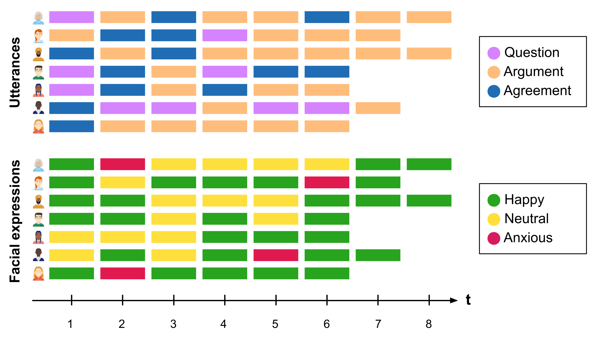
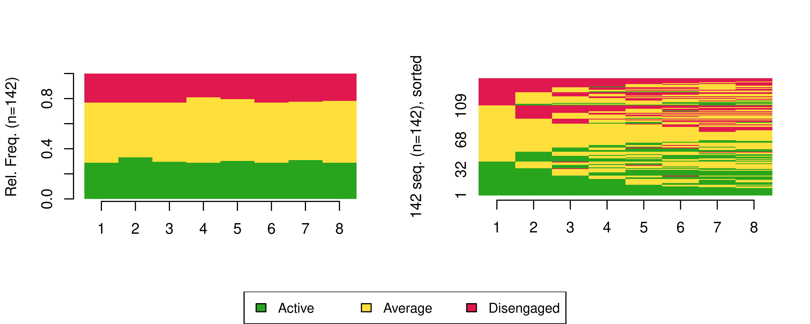

library(rio)
library(tidyverse)
library(TraMineR)
library(seqHMM)
library(WeightedCluster) 13 Multi-channel sequence analysis in educational research: An introduction and tutorial with R
Abstract
This chapter introduces multi-channel sequence analysis, a novel method that examines two or more synchronised sequences. While this approach is relatively new in social sciences, its relevance to educational research is growing as researchers gain access to diverse multimodal temporal data. Throughout this chapter, we describe multi-channel sequence analysis in detail, with an emphasis on how to detect patterns within the sequences, i.e., clusters —or trajectories— of multi-channel sequences that share similar temporal evolutions (or similar trajectories). To illustrate this method we present a step-by-step tutorial in R that analyses students’ sequences of online engagement and academic achievement, exploring their longitudinal association. We cover two approaches for clustering multi-channel sequences: one based on using distance-based algorithms, and the other employing mixture hidden Markov models inspired by recent research.
13.1 Introduction
Learning is a dynamic phenomenon which follows the unidirectional forward law of time; that is, learning occurs sequentially in a time-ordered manner [1, 2]. Throughout this book, we have devoted several chapters to sequence analysis of learner-related data, due to its increasingly central role in learning analytics and education research as a whole. First, in Chapter 10 [3], we presented an introduction to sequence analysis and a discussion on the relevance of this method. Subsequently, in Chapter 11 [4], we studied how to build sequences from multiple variables and analyse more complex aspects of sequences. Both Chapter 10 and Chapter 11 also deal with clustering sequences into trajectories which undergo a similar evolution using distance-based methods. Then, in Chapter 12 [5], we learned how to cluster sequential data using Markov models. Though Chapter 12 [5] touched briefly on simultaneous analysis of multi-channel sequences —albeit only from the Markovian point of view— we present the multi-channel perspective in greater detail here.
In this new chapter, we cover multi-channel sequence analysis, which deals with the analysis of two or more synchronised sequences, in greater detail. An example in educational research would be the analysis of the simultaneous unfolding of motivation, achievement, and engament sequences. Multi-channel sequence analysis is a rather novel method in social sciences [6–9] and its applications within educational research in general remain scarce. The increasing availability of student multimodal temporal data makes multi-channel sequence analysis a relevant and timely method to tackle the challenges that these new data bring.
Throughout this chapter, we describe multi-channel sequence analysis in detail, with an emphasis on how to detect patterns within the sequences, i.e., clusters —or trajectories— of multi-channel sequences that share similar temporal evolutions (or similar trajectories). We illustrate the method with a case study in which we examine students’ sequences of online engagement and academic achievement, where we analyse the longitudinal association between both constructs simultaneously. Here, we outline two perspectives on clustering multi-channel sequences and present both in the tutorial. The first approach uses distance-based clustering algorithms, very much in the spirit of the single-channel cluster analysis described in Chapter 10. We describe some limitations of this framework and then principally focus on a more efficient approach to identifying distinct trajectories using mixture hidden Markov models. We also show how covariates can be incorporated to make the Markovian framework even more powerful. This main analysis is inspired by the recently published paper by [10]. In the next section, we provide a description of the multi-channel sequence analysis framework. We follow with a review of the existing literature in learning analytics that has relied on multi-channel sequence analysis. Next, we include a step-by-step tutorial on how to implement multi-channel sequence analysis with R, with particular attention paid to clustering via distance-based algorithms and mixture hidden Markov models. Finally, we conclude with a brief discussion and provide recommendations for further reading.
13.2 Multi-channel sequence analysis
Multi-channel sequence analysis refers to the process of analysing sequential data that consists of multiple parallel channels or streams of (categorical) information. Each channel provides a different perspective or type of information. The goal of multi-channel sequence analysis is to jointly explore the dependencies and temporal interactions between the different channels and extract meaningful insights that may not be evident when considering each channel in isolation. The sources of information can be of very varied nature. For example, using video data of students working on a collaborative task, we could code students’ spoken utterances in one channel, and their facial expressions in another channel throughout the whole session (see Figure fig-multi). In this way, we could analyse how students’ expressions relate to what they are saying. Multi-channel sequence analysis often follows the following steps:

13.2.1 Step 1: Building the channel sequences
Just like in regular sequence analysis (see Chapter 10 [3]), the first step in multi-channel sequence analysis is to construct the sequences which constitute the different channels. A sequence is an ordered list of categorical elements (i.e., events, states or categories). These elements are discrete (as opposed to numerical values such as grades) and are ordered chronologically. In a sequence, time is not a continuum but a succession of discrete timepoints. These timepoints can be generated by sampling (e.g., each 30 seconds constitutes a new timepoint) or can emerge from an existing time scheme (e.g., each new lesson in a course is a new timepoint). In multi-channel sequence analysis, it is very important that all channels (i.e., parallel sequences) follow the same time scheme so they can be synchronised. As well as time points being aligned in this fashion, it is also typically assumed that the sequence length for each observation matches across channels (although some of the methods used can also deal with partially missing information). The elements of each sequence —typically referred to as the alphabet, which is unique for each channel— can be predefined events or categories from the beginning (e.g., utterances or facial expressions) or, in cases where we are dealing with numerical variables (e.g., heart rate or grades), we can convert them into a state or category by dividing the numerical variable into levels (e.g., tertiles, quartiles) or using clustering techniques. This way, we can focus on sharp changes in numerical variables and conceal small, probably insignificant changes. As Winne puts it [11], “reliability can sometimes be improved by tuning grain size of data so it is neither too coarse, masking variance within bins, nor too fine-grained, inviting distinctions that cannot be made reliably”. Once we have our channels represented as sequences of ordered elements that follow the same time scheme, we can use the steps learned in the introductory sequence analysis chapter to construct the sequences.
13.2.2 Step 2: Visualising the multi-channel sequence
When we have built the sequences corresponding to all of the channels, we can visualise the data. Visualising multi-channel sequence data is not a straightforward task, and we need to decide whether we want to present each channel separately or extend the alphabet to show a plot of combined states—or sometimes even both. The extended alphabet approach —in which the states are the combination of the states of all the channels— helps us understand the structure of the data and the typical combinations and evolution of the combined states from all of the channels. It usually works well when (1) the extended alphabet is moderate in size, (2) when there are no state combinations that are very rare, and (3) when the states are either fully observed or missing in all channels at the same time. The extended alphabet is likely to be of moderate size when there are at most 2–3 channels with a small alphabet in each, or if some combinations are not present in the data. Rare state combinations are typically impractical both when visualizing and analyzing the data—especially if there are many rare combinations or if the data are very sensitive in nature. Finally, if there are partially missing observations, i.e., observations that at some specific time point are missing from some of the channels but not all, we would need to deal with each combination of missing and observed states separately, which further extends the alphabet. If one or more of the three conditions are not met, it is often preferable to resort to presenting each channel separately or using visualization techniques that summarise information (e.g., sequence distribution plots).
Continuing with the previous example, the possible states in the extended alphabet would be all the combinations between the alphabet of the utterances channel (Question-Argument-Agreement) and the alphabet of the facial expressions channel (Happy-Neutral-Anxious). In Figure fig-multi2, we can see that the first student starts by ‘Question/Happy’, then goes to ‘Argument/Anxious’ and so on.

13.2.3 Step 3: Finding patterns (clusters or trajectories)
Patterns may exist in all types of sequences and, in fact, in all types of data. Discovering such patterns, variations, or groups of patterns is a central theme in analytics. In sequence analysis, similar patterns reflect common temporal pathways where the data share a similar temporal course. This could be a group of students, a typical succession of behavior, or a sequence of interactions. As such, the last typical step in the analysis is to find such patterns. Since these patterns are otherwise latent or unobservable, we need a clustering algorithm that unveils such hidden patterns. There are different possibilities to cluster multi-channel sequence data, of which two are described below: extensions to traditional distance-based clustering approaches widely used in single-channel analyses and Markovian models. The two approaches are then further distinguished in Section sec-covariates, with regard to the ability of the Markovian approach to directly accommodate covariates.
13.2.3.1 Traditional sequence analysis extensions
Broadly speaking, the first paradigm involves extending techniques commonly adopted in single-channel analyses to the multi-channel domain, by suitably summarising the information arising from all constituent channels. Within this first framework, two different approaches have been proposed.
The first consists of flattening the multi-channel data by combining the states (such as in the example in Figure fig-multi2) and treating the sequence as a single channel with an extended alphabet. Typically, one would then compute dissimilarities using this extended alphabet, most commonly using Optimal Matching (OM). However, this approach is not limited to distance-based clustering [12]; any of the methods, distance-based or otherwise, that we have seen in the previous chapters related to sequence analysis can be used to cluster sequences represented in this way (e.g., agglomerative hierarchical clustering using OM, or hidden Markov models). While this seems like an easier choice, the models tend to become too complex —in the sense of requiring a larger number of clusters and/or hidden states in order to adequately characterise the data— when the number of channels or numbers of per-channel states increase. Moreover, for even a moderate number of channels and/or moderate numbers of states per-channel, the size of the combined alphabet can become unwieldy. Indeed, using this approach in conjunction with OM has been criticised because of the difficulty of specifying appropriate substitution costs for such large combined alphabets [13]. As a reminder, the substitution cost refers to the penalty associated with replacing one element of a sequence with another one; these dissimilarites between all pairs of states are then used to calculate all pairwise distances between whole sequences, which are treated as the input to distance-based clustering algorithms (see Chapter 10 [3]).
The second, more common approach is explicitly distance-based and relies on an extension of the OM metric itself, by using a set of overall multi-channel costs derived from channel-specific costs, to calculate a pairwise dissimilarity matrix. The method relies on computing substitution costs for each constituent channel, combining the channels into a new multi-channel sequence object, and deriving an overall substitution cost matrix for the multi-channel object by adding (or averaging) the appropriate substitution costs across channels for a particular multi-state change, typically with equal weight given to each channel [14]. For instance, if the cost associated with substituting the states ‘Question’ and ‘Agreement’ in the utterances channel in Figure fig-multi is \(0.6\) and the cost of substituting ‘Happy’ and ‘Neutral’ in the facial expressions channel is \(1.2\), the cost associated with substitutions of ‘Question/Neutral’ for ‘Question/Happy’ and ‘Question/Neutral’ for ‘Agreement/Happy’ in Figure fig-multi2 would be \(1.2\) and \(1.8\), respectively. From such multi-channel costs, a pairwise multi-channel dissimilarity matrix can be obtained and all subsequent steps of the clustering analysis can proceed as per Chapter 10 thereafter.
That being said, adopting the extended OM approach rather than the extended alphabet approach does not resolve all limitations of the distance-based clustering paradigm. As Saqr et al. [15] noted, large sequences are hard to cluster using standard methods such as hierarchical clustering, which is memory inefficient and hard to parallelise or scale [16, 17]. Furthermore, distance-based clustering methods are limited by the theoretical maximum dimension of a matrix in R which is 2,147,483,647, corresponding to a maximum of 46,430 sequences. Using weights can fix the memory issue if the number of unique sequences remains below the threshold [18]. However, the more states (and combinations of states), the more unique the sequences tend to be, so the memory issue is even more typical with multi-channel sequence data. In such a case, Markovian methods may be the solution. Moreover, the particular choice of distance-based clustering algorithm must be chosen with care, and as ever the user must pre-specify the number of clusters, thereby often necessitating the evaluation of several computing solutions with different numbers of clusters, different hierarchical clustering linkage criteria, or different distance-based clustering algorithms entirely.
13.2.4 Step 4: Relating clusters to covariates
As we have seen, there are, broadly speaking, two conflicting perspectives on clustering in the sequence analysis community; algorithmic, distance-based clustering on the one hand, and model-based clustering on the other. Distance-based clustering of multi-channel sequences has already been described above, but it is useful to acknowledge that mixture Markov models and mixture hidden Markov models are precisely examples of model-based clustering methods. Moreover, seqHMM and the methods it implements are unique in offering a model-based approach to clustering multi-channel sequences. A key advantage of the model-based clustering framework is that it can easily be extended to directly account for information available in the form of covariates, as part of the underlying probabilistic model. Though the recently introduced mixture of exponential-distance models framework [22] attempts to reconcile the distance-based and model-based cultures in sequence analysis, while allowing for the direct incorporation of covariates, it is not based on Markovian principles, and most importantly can currently only accommodate single-channel sequences.
Otherwise, however, distance-based approaches typically cannot accommodate covariates, except as part of a post-hoc step whereby, typically, covariates are used as explanatory variables in a post-hoc multinomial regression with the cluster memberships used as the response (or as independent variables in linear or non-linear regression models). This is questionable as substituting a categorical variable indicating cluster membership disregards the heterogeneity within clusters and is clearly only sensible when the clusters are sufficiently homogeneous [23, 24]. It is often more desirable to incorporate covariates directly, i.e. to cluster sequences and relate the clusters to the covariates simultaneously. This represents an important distinction between the two approaches outlined above; this step does not apply to distance-based clustering approaches and is a crucial advantage of the Markovian approach which makes MHMMs even more powerful tools for clustering multi-channel sequences.
In theory, MHMMs can include covariates to explain the initial, transition, and/or emission probabilities. A natural use-case would be to allow subject-specific and possibly time-varying transition and emission probabilities (in the case of time-varying covariates). For example, if we think that transitioning from low to high achievement gets harder as the students get older we may add time as an explanatory variable to the model, allowing the probability of transitioning from low to high achievement to diminish in time. However, at the time of writing this chapter, these extensions are not supported in seqHMM (this may change in the future). Instead, the seqHMM package used in the examples supports time-constant covariates only. Specifically, the manner in which covariates are accommodated is similar in spirit to the aforementioned mixture of exponential-distance models framework and latent class regression [25], in that covariates are used for predicting cluster memberships for each observed sequence. Adding covariates to the model thus helps to both explain and influence the probabilities that each individual has of belonging to each cluster. By incorporating covariates in this way, we could, for example, find that being in a high-achievement cluster is predicted by gender, previous grades, or family background
In the terminology of mixtures of experts modelling, this approach corresponds to a so-called “gating network mixture of experts model”, whereby the distribution of the sequences depends on the latent cluster membership variable, which in turn depends on the covariates, while the sequences are independent of the covariates, conditional on the latent cluster membership variable (see [26] and [22] for examples). This, rather than having covariates affect the component distributions, is particularly appealing, as the interpretation of state-specific parameters is the same as it would be under a model without covariates. However, it is worth noting that the covariates do not merely explain the uncovered clusters; as part of the model, they drive the formation of the clusters. In other words, an otherwise identical model without dependence on covariates may uncover different groupings with different probabilities. However, this can be easily overcome by treating the selection of the most relevant subset of covariates as an issue of model selection via the BIC or other criteria and taking the number of clusters/states, set of initial probabilities, and set of covariates which jointly optimise the chosen criterion. The incorporation of covariates in MHMMs and related practical issues are also illustrated in the case study on the longitudinal association of engagement and achievement which follows.
13.3 Review of the literature
The use of multi-channel sequence analysis in learning analytics has so far been scarce. Most of the few studies that implemented this method used it to combine multiple modalities of data such as coded video data [27, 28], electrodermal activity [27, 28], clickstream/logged data [10, 29, 30], and assessment/achievement data [10, 30, 31]. The data were converted into different sequence channels using a variety of methods. For example, [27] manually coded video interactions as positive/negative/mixed to represent the emotional valence of individual interaction, and used a pre-defined threshold to discern between high and low arousal from electrodermal activity data. In the work by [30], two sequence channels were built from students’ daily tactics using the learning management system and an automated assessment tool for programming assignments respectively. The learning tactics were identified through hierarchical clustering of students’ trace log data in each environment. Similarly [10], created an engagement channel for each course in a study program based on students’ engagement states derived from the learning management system data, and an achievement state based on their grade tertiles. Another study [29] had five separate channels: the first channel represented the interactive dimension built from the social interactions through peer communications and online behaviours; the second channel represented the cognitive dimension constructed from students’ knowledge contributions at the superficial, medium, and deep levels; the third channel represented the regulative dimension which represented students’ regulation of their collaborative processes, including task understanding, goal setting and planning, as well as monitoring and reflection; the fourth channel represented the behavioural dimension which analysed students’ online behaviours, including resource management, concept mapping and observation, and the fifth channel represented the socio-emotional dimension, which included active listening and respect, encouraging participation and inclusion, as well as fostering cohesion.
A common step in the existing works is the use of clustering techniques to detect unobserved patterns within the multi-channel sequences. Articles have relied on hidden Markov models to identify hidden states in the data. For instance, [30] found three hidden states consisting of learning strategies which combine the use of the learning management system and an automated assessment tool: an instruction-oriented strategy where students consume learning resources to learn how to code; an independent coding strategy where students relied on their knowledge or used the learning resources available to complete the assignments, and a dependent coding strategy where students mostly relied on the help forums to complete their programming assignments. Most studies go one step further and identify distinct trajectories based on such hidden states. For example, [28] found four clusters of socio-emotional interaction episodes (positive, negative, occasional regulation, frequent regulation), which differed in terms of fluctuation of affective states and activated regulation of learning. The authors of [29] found three types of group collaborative patterns: behaviour-oriented, communication-behaviour-synergistic, and communication-oriented. To the knowledge of the authors, no article has relied on the distance-based approach (commonly used in single-channel sequence analysis) to cluster multi-channel sequences. However, this approach has been used in social sciences [9] as well as in other disciplines [e.g., 32].
13.4 Case study: the longitudinal association of engagement and achievement
To learn how to implement multi-channel sequence analysis we are going to practice with a real case study: we will investigate the longitudinal association between engagement and achievement across a study program using simulated data based on the study by [10]. We begin by creating a sequence for each of the channels (engagement and achievement) and then explore visualisations thereof. We then focus on clustering these data using the methods described above specifically tailored for multi-channel sequences, in order to present an empirical view of both the distance-based and Markovian perspectives. In doing so, we will first demonstrate how to construct a multi-channel pairwise OM dissimilarity matrix in order to adapt and apply the distance-based clustering approach of Chapter 10 to these data. Secondly, we will largely focus on using a mixture hidden Markov model to detect the longitudinal clusters of students that share a similar trajectory of engagement and achievement. Finally, we will demonstrate how to incorporate covariates under the model-based Markovian framework.
13.4.1 The packages
To accomplish our task, we will rely on several R packages We have use most of them throughout the book. Below is a brief summary of the packages required:
rio: A package for reading and saving data files with different extensions [33].seqHMM: A package designed for fitting hidden (latent) Markov models and mixture hidden Markov models for social sequence data and other categorical time series [21].tidyverse: A package that encompasses several basic packages for data manipulation and wrangling [34].TraMineR: As seen in the introductory sequence analysis chapter, this package helps us construct, analyse, and visualise sequences from time-ordered states or events [35].WeightedCluster: A package to cluster sequences and computing quality measures [18].
If you have not done so already, install the packages using the install.packages() command (e.g., install.packages("seqHMM")). We can then import them as follows:
13.4.2 The data
The data that we are going to use in this chapter is a synthetic dataset which contains the engagement states (Active, Average, or Disengaged) and achievement states (Achiever, Intermediate, or Low) for eight successive courses (each course is a timepoint). Each row contains an identifier for the student (UserID), an identifier for the course (CourseId), and the order (Sequence) in which the student took that course (1–8). For each course, a student has both an engagement state (Engagement) and an achievement state (Achievement). For example, a student can be 'Active' and 'Achiever' in the first course (Sequence = 1) they take, and 'Disengaged' and 'Low' achiever in the next. In addition, the dataset contains the final grade (0-100) and three time-constant covariates (they are the same for each student throughout all four courses): the previous grade (Prev_grade, 1-10), Attitude (0-20), and Gender (Male/Female). The dataset is described in more detail in the Data chapter of this book. We can import the data using the ìmport() command from rio:
URL <- "https://github.com/sonsoleslp/labook-data/raw/main/"
fileName <- "9_longitudinalEngagement/SequenceEngagementAchievement.xlsx"
df <- import(paste0(URL, fileName))
df UserID CourseID Sequence Engagement Final_Grade Achievement
1 00050F0E 4C3F37F0 1 Average 72.27 Achiever
2 00050F0E E54A52A3 2 Disengaged 72.56 Achiever
3 00050F0E AB7EC624 3 Average 78.78 Achiever
4 00050F0E B0E95213 4 Average 74.19 Achiever
5 00050F0E 0B301F55 5 Average 87.35 Achiever
6 00050F0E 2BEA9279 6 Average 86.57 Achiever
7 00050F0E 2E7F80D3 7 Average 67.14 Intermediate
8 00050F0E 79ED6873 8 Average 80.13 Achiever
9 006DD50A 4C3F37F0 1 Average 69.05 Intermediate
10 006DD50A E54A52A3 2 Average 65.48 Intermediate
11 006DD50A AB7EC624 3 Average 67.31 Intermediate
12 006DD50A B0E95213 4 Average 69.47 Intermediate
13 006DD50A 0B301F55 5 Average 64.94 Low
14 006DD50A 2BEA9279 6 Average 57.18 Low
15 006DD50A 2E7F80D3 7 Disengaged 61.10 Low
16 006DD50A 79ED6873 8 Average 60.64 Low
17 05D0E111 3ECEF7F3 1 Average 53.49 Low
18 05D0E111 6198B2D1 2 Disengaged 52.80 Low
19 05D0E111 7E38710A 3 Average 52.56 Low
20 05D0E111 92250150 4 Average 59.53 Low
21 05D0E111 FC7DC8A0 5 Average 65.50 Intermediate
22 05D0E111 3DB343E2 6 Disengaged 54.29 Low
23 05D0E111 2D879E52 7 Average 49.97 Low
24 05D0E111 4B912491 8 Average 54.52 Low
25 0637AF03 4C3F37F0 1 Active 62.82 Low
26 0637AF03 E54A52A3 2 Active 63.12 Low
27 0637AF03 AB7EC624 3 Active 67.31 Intermediate
28 0637AF03 B0E95213 4 Active 65.94 Intermediate
29 0637AF03 0B301F55 5 Active 62.88 Low
30 0637AF03 2BEA9279 6 Active 56.33 Low
31 0637AF03 2E7F80D3 7 Active 66.29 Intermediate
32 0637AF03 79ED6873 8 Active 67.53 Intermediate
33 065F7507 4C3F37F0 1 Disengaged 66.67 Intermediate
34 065F7507 E54A52A3 2 Disengaged 62.32 Low
35 065F7507 AB7EC624 3 Average 71.84 Achiever
36 065F7507 B0E95213 4 Disengaged 64.86 Low
37 065F7507 0B301F55 5 Average 59.58 Low
38 065F7507 2BEA9279 6 Average 62.62 Low
39 065F7507 2E7F80D3 7 Average 68.56 Intermediate
40 065F7507 79ED6873 8 Disengaged 64.11 Low
41 06AC3EDE 4C3F37F0 1 Average 70.27 Intermediate
42 06AC3EDE E54A52A3 2 Average 61.51 Low
43 06AC3EDE AB7EC624 3 Disengaged 72.46 Achiever
44 06AC3EDE B0E95213 4 Average 70.25 Intermediate
45 06AC3EDE 0B301F55 5 Disengaged 82.19 Achiever
46 06AC3EDE 2BEA9279 6 Average 76.65 Achiever
47 06AC3EDE 2E7F80D3 7 Average 69.42 Intermediate
48 06AC3EDE 79ED6873 8 Average 70.78 Achiever
49 08972814 A2B99E1D 1 Disengaged 64.40 Low
50 08972814 C6107FC4 2 Average 66.70 Intermediate
51 08972814 0F81E385 3 Disengaged 60.25 Low
52 08972814 8DDCF24B 4 Average 70.23 Intermediate
53 08972814 E93108C8 5 Disengaged 68.42 Intermediate
54 08972814 E97C8D1A 6 Disengaged 69.94 Intermediate
55 08972814 3DE2A32B 7 Average 68.74 Intermediate
56 08972814 D7DF3685 8 Average 67.73 Intermediate
57 089734B8 A2B99E1D 1 Average 59.08 Low
58 089734B8 C6107FC4 2 Average 59.30 Low
59 089734B8 0F81E385 3 Disengaged 52.45 Low
60 089734B8 8DDCF24B 4 Average 62.42 Low
61 089734B8 E93108C8 5 Average 57.58 Low
62 089734B8 E97C8D1A 6 Disengaged 60.30 Low
63 089734B8 3DE2A32B 7 Disengaged 56.54 Low
64 089734B8 D7DF3685 8 Disengaged 55.76 Low
65 0A30CA6E 6198B2D1 1 Active 56.70 Low
66 0A30CA6E 92250150 2 Average 55.28 Low
67 0A30CA6E 1D453454 3 Active 60.41 Low
68 0A30CA6E FC7DC8A0 4 Average 60.09 Low
69 0A30CA6E 3DB343E2 5 Average 51.28 Low
70 0A30CA6E 2D879E52 6 Average 57.06 Low
71 0A30CA6E 4B912491 7 Average 54.52 Low
72 0A30CA6E 2883BDDA 8 Average 51.33 Low
73 13FE5766 3ECEF7F3 1 Active 85.72 Achiever
74 13FE5766 6198B2D1 2 Active 90.89 Achiever
75 13FE5766 7E38710A 3 Average 92.04 Achiever
76 13FE5766 92250150 4 Active 88.10 Achiever
77 13FE5766 FC7DC8A0 5 Active 87.61 Achiever
78 13FE5766 3DB343E2 6 Active 92.27 Achiever
79 13FE5766 2D879E52 7 Active 93.36 Achiever
80 13FE5766 4B912491 8 Active 93.06 Achiever
81 16AD6797 3ECEF7F3 1 Average 64.02 Low
82 16AD6797 6198B2D1 2 Active 69.00 Intermediate
83 16AD6797 7E38710A 3 Average 51.54 Low
84 16AD6797 92250150 4 Average 62.35 Low
85 16AD6797 FC7DC8A0 5 Average 54.39 Low
86 16AD6797 3DB343E2 6 Average 59.11 Low
87 16AD6797 2D879E52 7 Disengaged 60.52 Low
88 16AD6797 4B912491 8 Disengaged 62.38 Low
89 173E67ED 3ECEF7F3 1 Disengaged 55.40 Low
90 173E67ED 6198B2D1 2 Average 61.63 Low
91 173E67ED 7E38710A 3 Average 62.15 Low
92 173E67ED 92250150 4 Disengaged 63.53 Low
93 173E67ED FC7DC8A0 5 Disengaged 57.79 Low
94 173E67ED 3DB343E2 6 Disengaged 59.11 Low
95 173E67ED 2D879E52 7 Disengaged 48.82 Low
96 173E67ED 4B912491 8 Disengaged 54.52 Low
97 1B48F5BA 3ECEF7F3 1 Average 81.25 Achiever
98 1B48F5BA 6198B2D1 2 Average 84.46 Achiever
99 1B48F5BA 7E38710A 3 Average 82.71 Achiever
100 1B48F5BA 92250150 4 Average 77.83 Achiever
101 1B48F5BA FC7DC8A0 5 Average 82.54 Achiever
102 1B48F5BA 3DB343E2 6 Disengaged 85.91 Achiever
103 1B48F5BA 2D879E52 7 Average 82.39 Achiever
104 1B48F5BA 4B912491 8 Average 84.01 Achiever
105 21EA54F8 4C3F37F0 1 Disengaged 70.27 Intermediate
106 21EA54F8 E54A52A3 2 Disengaged 69.38 Intermediate
107 21EA54F8 AB7EC624 3 Disengaged 67.31 Intermediate
108 21EA54F8 B0E95213 4 Disengaged 71.18 Achiever
109 21EA54F8 0B301F55 5 Average 66.25 Intermediate
110 21EA54F8 2BEA9279 6 Average 63.62 Low
111 21EA54F8 2E7F80D3 7 Average 69.42 Intermediate
112 21EA54F8 79ED6873 8 Average 74.46 Achiever
113 2926CF64 B51E1259 1 Disengaged 58.25 Low
114 2926CF64 C473D477 2 Disengaged 56.96 Low
115 2926CF64 C7FCE169 3 Disengaged 37.00 Low
116 2926CF64 00F0AFF5 4 Disengaged 46.80 Low
117 2926CF64 7AD1EA25 5 Disengaged 48.64 Low
118 2926CF64 42670932 6 Disengaged 47.13 Low
119 2926CF64 2E7F80D3 7 Disengaged 40.00 Low
120 2926CF64 79ED6873 8 Disengaged 45.67 Low
121 2A696D18 A2B99E1D 1 Average 56.84 Low
122 2A696D18 C6107FC4 2 Disengaged 69.27 Intermediate
123 2A696D18 0F81E385 3 Average 64.90 Low
124 2A696D18 8DDCF24B 4 Disengaged 69.76 Intermediate
125 2A696D18 E93108C8 5 Disengaged 62.72 Low
126 2A696D18 E97C8D1A 6 Disengaged 66.31 Intermediate
127 2A696D18 3DE2A32B 7 Disengaged 67.20 Intermediate
128 2A696D18 D7DF3685 8 Disengaged 64.04 Low
129 2AE7F682 3ECEF7F3 1 Average 68.05 Intermediate
130 2AE7F682 6198B2D1 2 Average 73.89 Achiever
131 2AE7F682 7E38710A 3 Average 73.43 Achiever
132 2AE7F682 92250150 4 Average 68.18 Intermediate
133 2AE7F682 FC7DC8A0 5 Disengaged 68.70 Intermediate
134 2AE7F682 3DB343E2 6 Average 66.84 Intermediate
135 2AE7F682 2D879E52 7 Average 67.86 Intermediate
136 2AE7F682 4B912491 8 Average 59.81 Low
137 2B39FC2C 4C3F37F0 1 Active 64.14 Low
138 2B39FC2C E54A52A3 2 Active 67.24 Intermediate
139 2B39FC2C AB7EC624 3 Active 69.09 Intermediate
140 2B39FC2C B0E95213 4 Active 67.69 Intermediate
141 2B39FC2C 0B301F55 5 Active 71.35 Achiever
142 2B39FC2C 2BEA9279 6 Active 76.65 Achiever
143 2B39FC2C 2E7F80D3 7 Average 69.42 Intermediate
144 2B39FC2C 79ED6873 8 Average 67.53 Intermediate
145 2B76A25A 4C3F37F0 1 Active 77.46 Achiever
146 2B76A25A E54A52A3 2 Active 80.52 Achiever
147 2B76A25A AB7EC624 3 Average 74.54 Achiever
148 2B76A25A B0E95213 4 Active 75.14 Achiever
149 2B76A25A 0B301F55 5 Active 73.76 Achiever
150 2B76A25A 2BEA9279 6 Active 76.65 Achiever
151 2B76A25A 2E7F80D3 7 Active 73.47 Achiever
152 2B76A25A 79ED6873 8 Active 74.46 Achiever
153 2BF883ED A2B99E1D 1 Average 74.83 Achiever
154 2BF883ED C6107FC4 2 Active 82.27 Achiever
155 2BF883ED 0F81E385 3 Average 78.69 Achiever
156 2BF883ED 8DDCF24B 4 Average 73.51 Achiever
157 2BF883ED E93108C8 5 Active 74.29 Achiever
158 2BF883ED E97C8D1A 6 Average 75.26 Achiever
159 2BF883ED 3DE2A32B 7 Average 73.03 Achiever
160 2BF883ED D7DF3685 8 Active 74.73 Achiever
161 2BF89F41 A2B99E1D 1 Active 74.83 Achiever
162 2BF89F41 C6107FC4 2 Average 83.44 Achiever
163 2BF89F41 0F81E385 3 Average 81.99 Achiever
164 2BF89F41 8DDCF24B 4 Average 76.45 Achiever
165 2BF89F41 E93108C8 5 Average 81.72 Achiever
166 2BF89F41 E97C8D1A 6 Average 78.33 Achiever
167 2BF89F41 3DE2A32B 7 Average 77.67 Achiever
168 2BF89F41 D7DF3685 8 Average 80.81 Achiever
169 2BF8A619 A2B99E1D 1 Active 67.43 Intermediate
170 2BF8A619 C6107FC4 2 Active 70.45 Intermediate
171 2BF8A619 0F81E385 3 Active 75.79 Achiever
172 2BF8A619 8DDCF24B 4 Average 78.37 Achiever
173 2BF8A619 E93108C8 5 Active 78.47 Achiever
174 2BF8A619 E97C8D1A 6 Active 73.16 Achiever
175 2BF8A619 3DE2A32B 7 Active 76.32 Achiever
176 2BF8A619 D7DF3685 8 Active 78.30 Achiever
177 2BF8BAB5 A2B99E1D 1 Average 77.95 Achiever
178 2BF8BAB5 C6107FC4 2 Active 74.66 Achiever
179 2BF8BAB5 0F81E385 3 Active 77.49 Achiever
180 2BF8BAB5 8DDCF24B 4 Average 70.23 Intermediate
181 2BF8BAB5 E93108C8 5 Average 78.47 Achiever
182 2BF8BAB5 E97C8D1A 6 Active 78.33 Achiever
183 2BF8BAB5 3DE2A32B 7 Active 76.32 Achiever
184 2BF8BAB5 D7DF3685 8 Active 78.30 Achiever
185 2BF8C805 A2B99E1D 1 Active 72.61 Achiever
186 2BF8C805 C6107FC4 2 Active 73.25 Achiever
187 2BF8C805 0F81E385 3 Active 81.99 Achiever
188 2BF8C805 8DDCF24B 4 Active 73.07 Achiever
189 2BF8C805 E93108C8 5 Active 78.47 Achiever
190 2BF8C805 E97C8D1A 6 Active 75.26 Achiever
191 2BF8C805 3DE2A32B 7 Active 76.32 Achiever
192 2BF8C805 D7DF3685 8 Active 75.87 Achiever
193 2DA4DA46 4C3F37F0 1 Average 68.07 Intermediate
194 2DA4DA46 E54A52A3 2 Average 64.71 Low
195 2DA4DA46 AB7EC624 3 Average 67.31 Intermediate
196 2DA4DA46 B0E95213 4 Average 69.47 Intermediate
197 2DA4DA46 0B301F55 5 Average 66.25 Intermediate
198 2DA4DA46 2BEA9279 6 Average 65.58 Intermediate
199 2DA4DA46 2E7F80D3 7 Average 68.56 Intermediate
200 2DA4DA46 79ED6873 8 Average 70.78 Achiever
201 33ED839D 3ECEF7F3 1 Active 54.58 Low
202 33ED839D 6198B2D1 2 Average 61.63 Low
203 33ED839D 7E38710A 3 Disengaged 62.15 Low
204 33ED839D 92250150 4 Average 65.31 Intermediate
205 33ED839D FC7DC8A0 5 Average 61.20 Low
206 33ED839D 3DB343E2 6 Average 55.22 Low
207 33ED839D 2D879E52 7 Average 57.06 Low
208 33ED839D 4B912491 8 Average 63.26 Low
209 347FE229 3ECEF7F3 1 Active 79.53 Achiever
210 347FE229 6198B2D1 2 Active 81.04 Achiever
211 347FE229 7E38710A 3 Active 76.90 Achiever
212 347FE229 92250150 4 Active 78.83 Achiever
213 347FE229 FC7DC8A0 5 Active 77.19 Achiever
214 347FE229 3DB343E2 6 Active 85.91 Achiever
215 347FE229 2D879E52 7 Active 77.32 Achiever
216 347FE229 4B912491 8 Active 82.80 Achiever
217 3787BEA1 4C3F37F0 1 Average 69.83 Intermediate
218 3787BEA1 E54A52A3 2 Disengaged 69.38 Intermediate
219 3787BEA1 AB7EC624 3 Average 71.00 Achiever
220 3787BEA1 B0E95213 4 Disengaged 72.06 Achiever
221 3787BEA1 0B301F55 5 Average 60.84 Low
222 3787BEA1 2BEA9279 6 Average 62.62 Low
223 3787BEA1 2E7F80D3 7 Average 72.94 Achiever
224 3787BEA1 79ED6873 8 Average 67.53 Intermediate
225 37C40B2F 3ECEF7F3 1 Average 64.02 Low
226 37C40B2F 6198B2D1 2 Average 61.63 Low
227 37C40B2F 7E38710A 3 Average 59.84 Low
228 37C40B2F 92250150 4 Average 65.31 Intermediate
229 37C40B2F FC7DC8A0 5 Average 63.44 Low
230 37C40B2F 3DB343E2 6 Average 62.45 Low
231 37C40B2F 2D879E52 7 Average 65.73 Intermediate
232 37C40B2F 4B912491 8 Average 57.88 Low
233 38E0C847 3ECEF7F3 1 Average 68.82 Intermediate
234 38E0C847 6198B2D1 2 Average 63.50 Low
235 38E0C847 7E38710A 3 Average 58.85 Low
236 38E0C847 92250150 4 Active 70.75 Intermediate
237 38E0C847 FC7DC8A0 5 Active 70.62 Intermediate
238 38E0C847 3DB343E2 6 Average 64.63 Low
239 38E0C847 2D879E52 7 Active 71.89 Achiever
240 38E0C847 4B912491 8 Average 67.49 Intermediate
241 3CC940F5 3ECEF7F3 1 Disengaged 61.04 Low
242 3CC940F5 6198B2D1 2 Disengaged 69.00 Intermediate
243 3CC940F5 7E38710A 3 Disengaged 64.47 Low
244 3CC940F5 92250150 4 Disengaged 72.00 Achiever
245 3CC940F5 FC7DC8A0 5 Disengaged 71.88 Achiever
246 3CC940F5 3DB343E2 6 Disengaged 69.88 Intermediate
247 3CC940F5 2D879E52 7 Average 67.86 Intermediate
248 3CC940F5 4B912491 8 Disengaged 71.74 Achiever
249 3D1B4803 4C3F37F0 1 Average 72.27 Achiever
250 3D1B4803 E54A52A3 2 Disengaged 77.71 Achiever
251 3D1B4803 AB7EC624 3 Average 76.76 Achiever
252 3D1B4803 B0E95213 4 Average 76.71 Achiever
253 3D1B4803 0B301F55 5 Active 76.81 Achiever
254 3D1B4803 2BEA9279 6 Average 76.65 Achiever
255 3D1B4803 2E7F80D3 7 Average 73.47 Achiever
256 3D1B4803 79ED6873 8 Average 70.78 Achiever
257 3E0811B0 3ECEF7F3 1 Active 81.25 Achiever
258 3E0811B0 6198B2D1 2 Active 81.04 Achiever
259 3E0811B0 7E38710A 3 Average 84.55 Achiever
260 3E0811B0 92250150 4 Average 77.83 Achiever
261 3E0811B0 FC7DC8A0 5 Active 82.54 Achiever
262 3E0811B0 3DB343E2 6 Active 90.14 Achiever
263 3E0811B0 2D879E52 7 Active 82.39 Achiever
264 3E0811B0 4B912491 8 Active 87.03 Achiever
265 3E683139 A2B99E1D 1 Average 56.12 Low
266 3E683139 C6107FC4 2 Disengaged 59.30 Low
267 3E683139 0F81E385 3 Disengaged 53.33 Low
268 3E683139 8DDCF24B 4 Average 61.77 Low
269 3E683139 E93108C8 5 Average 53.70 Low
270 3E683139 E97C8D1A 6 Disengaged 55.69 Low
271 3E683139 3DE2A32B 7 Disengaged 58.14 Low
272 3E683139 D7DF3685 8 Disengaged 53.76 Low
273 3E684389 A2B99E1D 1 Disengaged 66.58 Intermediate
274 3E684389 C6107FC4 2 Disengaged 59.30 Low
275 3E684389 0F81E385 3 Disengaged 54.23 Low
276 3E684389 8DDCF24B 4 Disengaged 62.42 Low
277 3E684389 E93108C8 5 Disengaged 59.78 Low
278 3E684389 E97C8D1A 6 Average 53.83 Low
279 3E684389 3DE2A32B 7 Disengaged 62.78 Low
280 3E684389 D7DF3685 8 Disengaged 59.39 Low
281 3E685F25 A2B99E1D 1 Average 64.40 Low
282 3E685F25 C6107FC4 2 Average 72.52 Achiever
283 3E685F25 0F81E385 3 Average 63.10 Low
284 3E685F25 8DDCF24B 4 Average 72.24 Achiever
285 3E685F25 E93108C8 5 Average 72.10 Achiever
286 3E685F25 E97C8D1A 6 Average 70.92 Achiever
287 3E685F25 3DE2A32B 7 Disengaged 71.15 Achiever
288 3E685F25 D7DF3685 8 Disengaged 70.60 Intermediate
289 3E687AD1 A2B99E1D 1 Disengaged 60.07 Low
290 3E687AD1 C6107FC4 2 Average 66.17 Intermediate
291 3E687AD1 0F81E385 3 Average 60.25 Low
292 3E687AD1 8DDCF24B 4 Average 71.47 Achiever
293 3E687AD1 E93108C8 5 Average 72.10 Achiever
294 3E687AD1 E97C8D1A 6 Average 71.95 Achiever
295 3E687AD1 3DE2A32B 7 Average 65.41 Intermediate
296 3E687AD1 D7DF3685 8 Average 67.73 Intermediate
297 3F72A9F3 3ECEF7F3 1 Average 83.09 Achiever
298 3F72A9F3 6198B2D1 2 Average 81.04 Achiever
299 3F72A9F3 7E38710A 3 Disengaged 82.71 Achiever
300 3F72A9F3 92250150 4 Average 83.95 Achiever
301 3F72A9F3 FC7DC8A0 5 Active 88.95 Achiever
302 3F72A9F3 3DB343E2 6 Average 79.12 Achiever
303 3F72A9F3 2D879E52 7 Average 88.74 Achiever
304 3F72A9F3 4B912491 8 Active 84.01 Achiever
305 41529D67 A2B99E1D 1 Average 72.61 Achiever
306 41529D67 C6107FC4 2 Average 60.88 Low
307 41529D67 0F81E385 3 Average 66.99 Intermediate
308 41529D67 8DDCF24B 4 Active 63.91 Low
309 41529D67 E93108C8 5 Average 64.67 Low
310 41529D67 E97C8D1A 6 Disengaged 44.23 Low
311 41529D67 3DE2A32B 7 Average 43.64 Low
312 41529D67 D7DF3685 8 Average 48.36 Low
313 4283C0D0 4C3F37F0 1 Active 76.39 Achiever
314 4283C0D0 E54A52A3 2 Active 78.91 Achiever
315 4283C0D0 AB7EC624 3 Active 71.84 Achiever
316 4283C0D0 B0E95213 4 Average 74.19 Achiever
317 4283C0D0 0B301F55 5 Average 76.81 Achiever
318 4283C0D0 2BEA9279 6 Active 76.65 Achiever
319 4283C0D0 2E7F80D3 7 Active 74.51 Achiever
320 4283C0D0 79ED6873 8 Active 80.13 Achiever
321 43CE036B 3ECEF7F3 1 Average 61.04 Low
322 43CE036B 6198B2D1 2 Average 57.55 Low
323 43CE036B 7E38710A 3 Active 58.85 Low
324 43CE036B 92250150 4 Active 65.31 Intermediate
325 43CE036B FC7DC8A0 5 Active 82.54 Achiever
326 43CE036B 3DB343E2 6 Active 67.90 Intermediate
327 43CE036B 2D879E52 7 Active 66.87 Intermediate
328 43CE036B 4B912491 8 Active 69.12 Intermediate
329 445C62DF 3ECEF7F3 1 Average 64.02 Low
330 445C62DF 6198B2D1 2 Average 73.89 Achiever
331 445C62DF 7E38710A 3 Average 78.58 Achiever
332 445C62DF 92250150 4 Average 71.40 Achiever
333 445C62DF FC7DC8A0 5 Average 75.56 Achiever
334 445C62DF 3DB343E2 6 Average 75.93 Achiever
335 445C62DF 2D879E52 7 Average 70.72 Intermediate
336 445C62DF 4B912491 8 Average 72.49 Achiever
337 481F3672 4C3F37F0 1 Average 69.83 Intermediate
338 481F3672 E54A52A3 2 Active 70.04 Intermediate
339 481F3672 AB7EC624 3 Average 71.00 Achiever
340 481F3672 B0E95213 4 Average 74.19 Achiever
341 481F3672 0B301F55 5 Average 76.81 Achiever
342 481F3672 2BEA9279 6 Average 71.75 Achiever
343 481F3672 2E7F80D3 7 Active 74.51 Achiever
344 481F3672 79ED6873 8 Average 74.46 Achiever
345 4AAE9BB2 C6107FC4 1 Disengaged 59.30 Low
346 4AAE9BB2 4C3F37F0 2 Average 62.82 Low
347 4AAE9BB2 E54A52A3 3 Average 63.12 Low
348 4AAE9BB2 AB7EC624 4 Average 67.31 Intermediate
349 4AAE9BB2 B0E95213 5 Average 60.35 Low
350 4AAE9BB2 0B301F55 6 Average 54.67 Low
351 4AAE9BB2 2BEA9279 7 Disengaged 57.18 Low
352 4AAE9BB2 2E7F80D3 8 Active 60.18 Low
353 4E2B9146 3ECEF7F3 1 Average 74.94 Achiever
354 4E2B9146 6198B2D1 2 Active 72.96 Achiever
355 4E2B9146 7E38710A 3 Active 68.90 Intermediate
356 4E2B9146 92250150 4 Average 72.75 Achiever
357 4E2B9146 FC7DC8A0 5 Active 82.54 Achiever
358 4E2B9146 3DB343E2 6 Active 75.93 Achiever
359 4E2B9146 2D879E52 7 Active 74.23 Achiever
360 4E2B9146 4B912491 8 Active 82.80 Achiever
361 4E4846BE A2B99E1D 1 Active 74.83 Achiever
362 4E4846BE C6107FC4 2 Active 74.66 Achiever
363 4E4846BE 0F81E385 3 Active 81.99 Achiever
364 4E4846BE 8DDCF24B 4 Active 75.45 Achiever
365 4E4846BE E93108C8 5 Average 70.19 Intermediate
366 4E4846BE E97C8D1A 6 Active 69.94 Intermediate
367 4E4846BE 3DE2A32B 7 Active 76.32 Achiever
368 4E4846BE D7DF3685 8 Active 75.87 Achiever
369 4E485A12 A2B99E1D 1 Active 72.61 Achiever
370 4E485A12 C6107FC4 2 Active 85.05 Achiever
371 4E485A12 0F81E385 3 Active 83.62 Achiever
372 4E485A12 8DDCF24B 4 Active 82.97 Achiever
373 4E485A12 E93108C8 5 Active 83.25 Achiever
374 4E485A12 E97C8D1A 6 Active 80.04 Achiever
375 4E485A12 3DE2A32B 7 Active 80.49 Achiever
376 4E485A12 D7DF3685 8 Active 85.77 Achiever
377 51A82B85 4C3F37F0 1 Active 81.44 Achiever
378 51A82B85 E54A52A3 2 Active 84.83 Achiever
379 51A82B85 AB7EC624 3 Active 76.76 Achiever
380 51A82B85 B0E95213 4 Active 81.15 Achiever
381 51A82B85 0B301F55 5 Average 76.81 Achiever
382 51A82B85 2BEA9279 6 Average 76.65 Achiever
383 51A82B85 2E7F80D3 7 Average 69.42 Intermediate
384 51A82B85 79ED6873 8 Active 80.13 Achiever
385 54EE2A89 4C3F37F0 1 Average 76.39 Achiever
386 54EE2A89 E54A52A3 2 Average 80.52 Achiever
387 54EE2A89 AB7EC624 3 Average 71.84 Achiever
388 54EE2A89 B0E95213 4 Average 72.06 Achiever
389 54EE2A89 0B301F55 5 Average 54.67 Low
390 54EE2A89 2BEA9279 6 Average 55.66 Low
391 54EE2A89 2E7F80D3 7 Average 68.56 Intermediate
392 54EE2A89 79ED6873 8 Average 60.64 Low
393 579A8B88 4C3F37F0 1 Active 81.44 Achiever
394 579A8B88 E54A52A3 2 Active 72.56 Achiever
395 579A8B88 AB7EC624 3 Active 71.00 Achiever
396 579A8B88 B0E95213 4 Active 76.71 Achiever
397 579A8B88 0B301F55 5 Active 71.35 Achiever
398 579A8B88 2BEA9279 6 Average 70.56 Intermediate
399 579A8B88 2E7F80D3 7 Average 64.42 Low
400 579A8B88 79ED6873 8 Average 67.53 Intermediate
401 5F9F6279 A2B99E1D 1 Average 61.14 Low
402 5F9F6279 C6107FC4 2 Disengaged 59.30 Low
403 5F9F6279 0F81E385 3 Disengaged 61.17 Low
404 5F9F6279 8DDCF24B 4 Disengaged 59.75 Low
405 5F9F6279 E93108C8 5 Average 62.72 Low
406 5F9F6279 E97C8D1A 6 Disengaged 53.15 Low
407 5F9F6279 3DE2A32B 7 Disengaged 53.20 Low
408 5F9F6279 D7DF3685 8 Disengaged 63.17 Low
409 60663E96 3ECEF7F3 1 Active 73.78 Achiever
410 60663E96 6198B2D1 2 Active 70.87 Achiever
411 60663E96 7E38710A 3 Active 74.97 Achiever
412 60663E96 92250150 4 Active 75.20 Achiever
413 60663E96 FC7DC8A0 5 Active 75.56 Achiever
414 60663E96 3DB343E2 6 Active 72.02 Achiever
415 60663E96 2D879E52 7 Active 77.32 Achiever
416 60663E96 4B912491 8 Active 75.60 Achiever
417 611C86D5 3ECEF7F3 1 Active 76.58 Achiever
418 611C86D5 6198B2D1 2 Active 73.89 Achiever
419 611C86D5 7E38710A 3 Average 78.58 Achiever
420 611C86D5 92250150 4 Active 80.76 Achiever
421 611C86D5 FC7DC8A0 5 Active 69.80 Intermediate
422 611C86D5 3DB343E2 6 Active 79.12 Achiever
423 611C86D5 2D879E52 7 Active 77.32 Achiever
424 611C86D5 4B912491 8 Active 75.60 Achiever
425 612708C8 A2B99E1D 1 Average 77.95 Achiever
426 612708C8 C6107FC4 2 Active 76.86 Achiever
427 612708C8 0F81E385 3 Active 78.69 Achiever
428 612708C8 8DDCF24B 4 Active 77.61 Achiever
429 612708C8 E93108C8 5 Average 72.10 Achiever
430 612708C8 E97C8D1A 6 Active 65.24 Intermediate
431 612708C8 3DE2A32B 7 Average 73.93 Achiever
432 612708C8 D7DF3685 8 Average 75.87 Achiever
433 61271464 A2B99E1D 1 Average 74.83 Achiever
434 61271464 C6107FC4 2 Active 70.45 Intermediate
435 61271464 0F81E385 3 Active 83.62 Achiever
436 61271464 8DDCF24B 4 Average 75.45 Achiever
437 61271464 E93108C8 5 Average 74.29 Achiever
438 61271464 E97C8D1A 6 Active 73.16 Achiever
439 61271464 3DE2A32B 7 Active 73.93 Achiever
440 61271464 D7DF3685 8 Average 77.23 Achiever
441 61272D3C A2B99E1D 1 Disengaged 77.95 Achiever
442 61272D3C C6107FC4 2 Average 83.44 Achiever
443 61272D3C 0F81E385 3 Active 81.99 Achiever
444 61272D3C 8DDCF24B 4 Active 78.37 Achiever
445 61272D3C E93108C8 5 Average 80.24 Achiever
446 61272D3C E97C8D1A 6 Active 75.26 Achiever
447 61272D3C 3DE2A32B 7 Active 77.67 Achiever
448 61272D3C D7DF3685 8 Active 74.73 Achiever
449 61273190 A2B99E1D 1 Average 76.48 Achiever
450 61273190 C6107FC4 2 Average 85.05 Achiever
451 61273190 0F81E385 3 Average 81.99 Achiever
452 61273190 8DDCF24B 4 Average 81.91 Achiever
453 61273190 E93108C8 5 Active 88.01 Achiever
454 61273190 E97C8D1A 6 Average 83.34 Achiever
455 61273190 3DE2A32B 7 Average 77.67 Achiever
456 61273190 D7DF3685 8 Average 80.81 Achiever
457 612766D4 A2B99E1D 1 Average 88.27 Achiever
458 612766D4 C6107FC4 2 Average 62.68 Low
459 612766D4 0F81E385 3 Average 71.32 Achiever
460 612766D4 8DDCF24B 4 Active 61.77 Low
461 612766D4 E93108C8 5 Average 69.35 Intermediate
462 612766D4 E97C8D1A 6 Average 57.11 Low
463 612766D4 3DE2A32B 7 Average 68.02 Intermediate
464 612766D4 D7DF3685 8 Average 67.16 Intermediate
465 67F45F22 3ECEF7F3 1 Average 79.53 Achiever
466 67F45F22 6198B2D1 2 Disengaged 79.20 Achiever
467 67F45F22 7E38710A 3 Disengaged 73.43 Achiever
468 67F45F22 92250150 4 Disengaged 73.84 Achiever
469 67F45F22 FC7DC8A0 5 Disengaged 57.79 Low
470 67F45F22 3DB343E2 6 Disengaged 70.89 Achiever
471 67F45F22 2D879E52 7 Disengaged 70.72 Intermediate
472 67F45F22 4B912491 8 Disengaged 78.21 Achiever
473 69AA2409 3ECEF7F3 1 Disengaged 62.94 Low
474 69AA2409 6198B2D1 2 Disengaged 63.50 Low
475 69AA2409 7E38710A 3 Disengaged 59.84 Low
476 69AA2409 92250150 4 Active 61.12 Low
477 69AA2409 FC7DC8A0 5 Average 68.70 Intermediate
478 69AA2409 3DB343E2 6 Average 61.36 Low
479 69AA2409 2D879E52 7 Average 65.73 Intermediate
480 69AA2409 4B912491 8 Average 66.72 Intermediate
481 6CF914F8 3ECEF7F3 1 Active 62.94 Low
482 6CF914F8 6198B2D1 2 Average 61.63 Low
483 6CF914F8 7E38710A 3 Active 64.47 Low
484 6CF914F8 92250150 4 Active 68.66 Intermediate
485 6CF914F8 FC7DC8A0 5 Average 69.80 Intermediate
486 6CF914F8 3DB343E2 6 Average 62.45 Low
487 6CF914F8 2D879E52 7 Average 67.86 Intermediate
488 6CF914F8 4B912491 8 Average 59.81 Low
489 72C883A2 C6107FC4 1 Disengaged 69.27 Intermediate
490 72C883A2 8DDCF24B 2 Disengaged 58.10 Low
491 72C883A2 4C3F37F0 3 Average 66.67 Intermediate
492 72C883A2 E54A52A3 4 Average 64.71 Low
493 72C883A2 AB7EC624 5 Average 75.76 Achiever
494 72C883A2 B0E95213 6 Average 76.71 Achiever
495 72C883A2 0B301F55 7 Average 71.35 Achiever
496 72C883A2 2BEA9279 8 Average 78.26 Achiever
497 74B79FE8 A2B99E1D 1 Average 56.84 Low
498 74B79FE8 C6107FC4 2 Average 76.86 Achiever
499 74B79FE8 0F81E385 3 Active 67.83 Intermediate
500 74B79FE8 8DDCF24B 4 Average 73.51 Achiever
501 74B79FE8 E93108C8 5 Active 59.78 Low
502 74B79FE8 E97C8D1A 6 Active 75.26 Achiever
503 74B79FE8 3DE2A32B 7 Average 76.32 Achiever
504 74B79FE8 D7DF3685 8 Average 70.60 Intermediate
505 74B7C8AC A2B99E1D 1 Disengaged 48.73 Low
506 74B7C8AC C6107FC4 2 Average 67.37 Intermediate
507 74B7C8AC 0F81E385 3 Average 62.07 Low
508 74B7C8AC 8DDCF24B 4 Average 65.78 Intermediate
509 74B7C8AC E93108C8 5 Disengaged 67.47 Intermediate
510 74B7C8AC E97C8D1A 6 Average 58.01 Low
511 74B7C8AC 3DE2A32B 7 Average 65.41 Intermediate
512 74B7C8AC D7DF3685 8 Disengaged 63.17 Low
513 74B7D400 A2B99E1D 1 Disengaged 67.43 Intermediate
514 74B7D400 C6107FC4 2 Active 72.52 Achiever
515 74B7D400 0F81E385 3 Average 60.25 Low
516 74B7D400 8DDCF24B 4 Average 64.99 Low
517 74B7D400 E93108C8 5 Average 61.00 Low
518 74B7D400 E97C8D1A 6 Average 66.31 Intermediate
519 74B7D400 3DE2A32B 7 Active 67.20 Intermediate
520 74B7D400 D7DF3685 8 Average 61.66 Low
521 74B7F1F4 A2B99E1D 1 Average 71.42 Achiever
522 74B7F1F4 C6107FC4 2 Average 59.98 Low
523 74B7F1F4 0F81E385 3 Disengaged 64.90 Low
524 74B7F1F4 8DDCF24B 4 Average 71.47 Achiever
525 74B7F1F4 E93108C8 5 Average 62.72 Low
526 74B7F1F4 E97C8D1A 6 Disengaged 60.30 Low
527 74B7F1F4 3DE2A32B 7 Disengaged 58.14 Low
528 74B7F1F4 D7DF3685 8 Disengaged 59.39 Low
529 775501BE 4C3F37F0 1 Disengaged 67.35 Intermediate
530 775501BE E54A52A3 2 Disengaged 66.48 Intermediate
531 775501BE AB7EC624 3 Disengaged 63.93 Low
532 775501BE B0E95213 4 Disengaged 60.35 Low
533 775501BE 0B301F55 5 Disengaged 54.67 Low
534 775501BE 2BEA9279 6 Disengaged 52.08 Low
535 775501BE 2E7F80D3 7 Disengaged 62.85 Low
536 775501BE 79ED6873 8 Disengaged 60.64 Low
537 777CB81A A2B99E1D 1 Disengaged 56.84 Low
538 777CB81A C6107FC4 2 Average 69.27 Intermediate
539 777CB81A 0F81E385 3 Disengaged 61.17 Low
540 777CB81A 8DDCF24B 4 Disengaged 63.06 Low
541 777CB81A E93108C8 5 Disengaged 62.72 Low
542 777CB81A E97C8D1A 6 Disengaged 53.15 Low
543 777CB81A 3DE2A32B 7 Disengaged 61.06 Low
544 777CB81A D7DF3685 8 Disengaged 63.17 Low
545 7B61F926 4C3F37F0 1 Average 69.05 Intermediate
546 7B61F926 E54A52A3 2 Average 75.18 Achiever
547 7B61F926 AB7EC624 3 Average 74.54 Achiever
548 7B61F926 B0E95213 4 Average 75.14 Achiever
549 7B61F926 0B301F55 5 Average 73.76 Achiever
550 7B61F926 2BEA9279 6 Average 73.81 Achiever
551 7B61F926 2E7F80D3 7 Average 75.82 Achiever
552 7B61F926 79ED6873 8 Average 74.46 Achiever
553 7C6124C9 4C3F37F0 1 Average 62.82 Low
554 7C6124C9 E54A52A3 2 Average 64.71 Low
555 7C6124C9 AB7EC624 3 Active 67.31 Intermediate
556 7C6124C9 B0E95213 4 Average 62.03 Low
557 7C6124C9 0B301F55 5 Active 62.88 Low
558 7C6124C9 2BEA9279 6 Active 60.55 Low
559 7C6124C9 2E7F80D3 7 Average 60.18 Low
560 7C6124C9 79ED6873 8 Active 67.53 Intermediate
561 7F84927E 3ECEF7F3 1 Active 79.53 Achiever
562 7F84927E 6198B2D1 2 Active 77.79 Achiever
563 7F84927E 7E38710A 3 Active 78.58 Achiever
564 7F84927E 92250150 4 Active 73.84 Achiever
565 7F84927E FC7DC8A0 5 Average 57.79 Low
566 7F84927E 3DB343E2 6 Average 79.12 Achiever
567 7F84927E 2D879E52 7 Active 82.39 Achiever
568 7F84927E 4B912491 8 Average 69.12 Intermediate
569 80213F7A 3ECEF7F3 1 Active 68.82 Intermediate
570 80213F7A 6198B2D1 2 Active 71.91 Achiever
571 80213F7A 7E38710A 3 Active 70.03 Intermediate
572 80213F7A 92250150 4 Average 68.18 Intermediate
573 80213F7A FC7DC8A0 5 Average 57.79 Low
574 80213F7A 3DB343E2 6 Disengaged 67.90 Intermediate
575 80213F7A 2D879E52 7 Average 67.86 Intermediate
576 80213F7A 4B912491 8 Average 69.12 Intermediate
577 80EF3C8F 8DDCF24B 1 Disengaged 42.52 Low
578 80EF3C8F 4C3F37F0 2 Average 63.42 Low
579 80EF3C8F E54A52A3 3 Average 59.14 Low
580 80EF3C8F AB7EC624 4 Average 60.46 Low
581 80EF3C8F B0E95213 5 Average 51.88 Low
582 80EF3C8F 6198B2D1 6 Active 58.88 Low
583 80EF3C8F AE740D27 7 Active 66.96 Intermediate
584 80EF3C8F 0579A725 8 Active 58.79 Low
585 84101D4B 4C3F37F0 1 Average 64.68 Low
586 84101D4B E54A52A3 2 Average 63.12 Low
587 84101D4B AB7EC624 3 Average 61.80 Low
588 84101D4B B0E95213 4 Average 57.25 Low
589 84101D4B 0B301F55 5 Average 54.67 Low
590 84101D4B 2BEA9279 6 Average 51.17 Low
591 84101D4B 2E7F80D3 7 Average 56.67 Low
592 84101D4B 79ED6873 8 Average 60.64 Low
593 88B88C8A A2B99E1D 1 Average 83.20 Achiever
594 88B88C8A C6107FC4 2 Disengaged 72.52 Achiever
595 88B88C8A 0F81E385 3 Disengaged 66.99 Intermediate
596 88B88C8A 8DDCF24B 4 Disengaged 76.45 Achiever
597 88B88C8A E93108C8 5 Disengaged 72.10 Achiever
598 88B88C8A E97C8D1A 6 Average 69.94 Intermediate
599 88B88C8A 3DE2A32B 7 Disengaged 71.15 Achiever
600 88B88C8A D7DF3685 8 Disengaged 74.73 Achiever
601 88B89026 A2B99E1D 1 Active 63.33 Low
602 88B89026 C6107FC4 2 Active 73.97 Achiever
603 88B89026 0F81E385 3 Active 66.08 Intermediate
604 88B89026 8DDCF24B 4 Active 73.07 Achiever
605 88B89026 E93108C8 5 Active 67.47 Intermediate
606 88B89026 E97C8D1A 6 Active 70.92 Achiever
607 88B89026 3DE2A32B 7 Active 71.15 Achiever
608 88B89026 D7DF3685 8 Average 67.73 Intermediate
609 88B8B5D2 A2B99E1D 1 Active 63.33 Low
610 88B8B5D2 C6107FC4 2 Average 67.37 Intermediate
611 88B8B5D2 0F81E385 3 Average 60.25 Low
612 88B8B5D2 8DDCF24B 4 Active 67.23 Intermediate
613 88B8B5D2 E93108C8 5 Active 70.19 Intermediate
614 88B8B5D2 E97C8D1A 6 Average 60.30 Low
615 88B8B5D2 3DE2A32B 7 Average 68.02 Intermediate
616 88B8B5D2 D7DF3685 8 Average 68.51 Intermediate
617 935CB9FC 3ECEF7F3 1 Average 66.06 Intermediate
618 935CB9FC 6198B2D1 2 Disengaged 66.53 Intermediate
619 935CB9FC 7E38710A 3 Disengaged 57.27 Low
620 935CB9FC 92250150 4 Average 65.97 Intermediate
621 935CB9FC FC7DC8A0 5 Average 64.44 Low
622 935CB9FC 3DB343E2 6 Average 59.11 Low
623 935CB9FC 2D879E52 7 Average 58.08 Low
624 935CB9FC 4B912491 8 Average 68.35 Intermediate
625 94950CE3 4C3F37F0 1 Active 66.11 Intermediate
626 94950CE3 E54A52A3 2 Active 64.71 Low
627 94950CE3 AB7EC624 3 Active 67.94 Intermediate
628 94950CE3 B0E95213 4 Active 69.47 Intermediate
629 94950CE3 0B301F55 5 Average 66.25 Intermediate
630 94950CE3 2BEA9279 6 Average 63.62 Low
631 94950CE3 2E7F80D3 7 Active 69.42 Intermediate
632 94950CE3 79ED6873 8 Average 64.11 Low
633 94CED848 3ECEF7F3 1 Active 68.82 Intermediate
634 94CED848 6198B2D1 2 Active 63.50 Low
635 94CED848 7E38710A 3 Active 76.90 Achiever
636 94CED848 92250150 4 Active 68.66 Intermediate
637 94CED848 FC7DC8A0 5 Average 69.80 Intermediate
638 94CED848 3DB343E2 6 Active 69.88 Intermediate
639 94CED848 2D879E52 7 Active 67.86 Intermediate
640 94CED848 4B912491 8 Active 62.38 Low
641 985AFF35 B51E1259 1 Average 54.19 Low
642 985AFF35 C473D477 2 Disengaged 55.99 Low
643 985AFF35 0B301F55 3 Disengaged 64.94 Low
644 985AFF35 2BEA9279 4 Disengaged 62.62 Low
645 985AFF35 2E7F80D3 5 Disengaged 61.10 Low
646 985AFF35 79ED6873 6 Disengaged 60.64 Low
647 985AFF35 702CCDB0 7 Average 56.22 Low
648 985AFF35 CBE4E412 8 Average 46.43 Low
649 9CB99B43 A2B99E1D 1 Average 62.21 Low
650 9CB99B43 C6107FC4 2 Active 61.31 Low
651 9CB99B43 0F81E385 3 Average 64.90 Low
652 9CB99B43 8DDCF24B 4 Average 61.77 Low
653 9CB99B43 E93108C8 5 Average 57.58 Low
654 9CB99B43 E97C8D1A 6 Average 67.27 Intermediate
655 9CB99B43 3DE2A32B 7 Average 67.20 Intermediate
656 9CB99B43 D7DF3685 8 Average 52.30 Low
657 9D283E5E A2B99E1D 1 Average 72.61 Achiever
658 9D283E5E C6107FC4 2 Average 69.27 Intermediate
659 9D283E5E 0F81E385 3 Average 75.79 Achiever
660 9D283E5E 8DDCF24B 4 Average 65.78 Intermediate
661 9D283E5E E93108C8 5 Average 62.72 Low
662 9D283E5E E97C8D1A 6 Active 71.95 Achiever
663 9D283E5E 3DE2A32B 7 Active 73.03 Achiever
664 9D283E5E D7DF3685 8 Active 72.22 Achiever
665 9D285042 A2B99E1D 1 Average 72.61 Achiever
666 9D285042 C6107FC4 2 Active 77.73 Achiever
667 9D285042 0F81E385 3 Active 78.69 Achiever
668 9D285042 8DDCF24B 4 Active 80.73 Achiever
669 9D285042 E93108C8 5 Active 81.72 Achiever
670 9D285042 E97C8D1A 6 Active 83.34 Achiever
671 9D285042 3DE2A32B 7 Active 77.67 Achiever
672 9D285042 D7DF3685 8 Active 80.81 Achiever
673 9D28691A A2B99E1D 1 Disengaged 67.43 Intermediate
674 9D28691A C6107FC4 2 Average 66.17 Intermediate
675 9D28691A 0F81E385 3 Average 66.99 Intermediate
676 9D28691A 8DDCF24B 4 Average 73.51 Achiever
677 9D28691A E93108C8 5 Disengaged 70.19 Intermediate
678 9D28691A E97C8D1A 6 Average 69.94 Intermediate
679 9D28691A 3DE2A32B 7 Average 76.32 Achiever
680 9D28691A D7DF3685 8 Average 74.73 Achiever
681 9D2875B6 A2B99E1D 1 Active 79.78 Achiever
682 9D2875B6 C6107FC4 2 Active 76.86 Achiever
683 9D2875B6 0F81E385 3 Active 77.49 Achiever
684 9D2875B6 8DDCF24B 4 Active 75.45 Achiever
685 9D2875B6 E93108C8 5 Active 81.72 Achiever
686 9D2875B6 E97C8D1A 6 Active 75.26 Achiever
687 9D2875B6 3DE2A32B 7 Active 72.03 Achiever
688 9D2875B6 D7DF3685 8 Active 75.87 Achiever
689 9EB92BD1 3ECEF7F3 1 Average 79.53 Achiever
690 9EB92BD1 6198B2D1 2 Average 72.96 Achiever
691 9EB92BD1 7E38710A 3 Active 78.58 Achiever
692 9EB92BD1 92250150 4 Active 76.26 Achiever
693 9EB92BD1 FC7DC8A0 5 Active 82.54 Achiever
694 9EB92BD1 3DB343E2 6 Active 85.91 Achiever
695 9EB92BD1 2D879E52 7 Active 78.73 Achiever
696 9EB92BD1 4B912491 8 Active 75.60 Achiever
697 A143CD8D 4C3F37F0 1 Average 69.05 Intermediate
698 A143CD8D E54A52A3 2 Active 72.56 Achiever
699 A143CD8D AB7EC624 3 Active 71.84 Achiever
700 A143CD8D B0E95213 4 Active 69.47 Intermediate
701 A143CD8D 0B301F55 5 Active 59.58 Low
702 A143CD8D 2BEA9279 6 Average 61.50 Low
703 A143CD8D 2E7F80D3 7 Average 70.95 Achiever
704 A143CD8D 79ED6873 8 Active 70.78 Achiever
705 A9B1C803 4C3F37F0 1 Average 69.83 Intermediate
706 A9B1C803 E54A52A3 2 Average 68.61 Intermediate
707 A9B1C803 AB7EC624 3 Average 73.96 Achiever
708 A9B1C803 B0E95213 4 Average 70.25 Intermediate
709 A9B1C803 0B301F55 5 Average 64.94 Low
710 A9B1C803 2BEA9279 6 Disengaged 72.91 Achiever
711 A9B1C803 2E7F80D3 7 Average 70.17 Intermediate
712 A9B1C803 79ED6873 8 Average 67.53 Intermediate
713 A9D91207 4C3F37F0 1 Average 67.35 Intermediate
714 A9D91207 E54A52A3 2 Active 68.61 Intermediate
715 A9D91207 AB7EC624 3 Average 69.09 Intermediate
716 A9D91207 B0E95213 4 Active 67.69 Intermediate
717 A9D91207 0B301F55 5 Average 56.17 Low
718 A9D91207 2BEA9279 6 Active 60.55 Low
719 A9D91207 2E7F80D3 7 Active 65.36 Intermediate
720 A9D91207 79ED6873 8 Active 60.64 Low
721 AB944042 4C3F37F0 1 Disengaged 59.55 Low
722 AB944042 E54A52A3 2 Disengaged 54.14 Low
723 AB944042 AB7EC624 3 Average 61.80 Low
724 AB944042 B0E95213 4 Average 60.35 Low
725 AB944042 0B301F55 5 Disengaged 54.67 Low
726 AB944042 2BEA9279 6 Disengaged 52.08 Low
727 AB944042 2E7F80D3 7 Disengaged 52.41 Low
728 AB944042 79ED6873 8 Disengaged 64.11 Low
729 ABDF3B2F 4C3F37F0 1 Active 72.27 Achiever
730 ABDF3B2F E54A52A3 2 Average 73.35 Achiever
731 ABDF3B2F AB7EC624 3 Average 67.94 Intermediate
732 ABDF3B2F B0E95213 4 Average 65.94 Intermediate
733 ABDF3B2F 0B301F55 5 Active 72.64 Achiever
734 ABDF3B2F 2BEA9279 6 Average 70.56 Intermediate
735 ABDF3B2F 2E7F80D3 7 Average 73.47 Achiever
736 ABDF3B2F 79ED6873 8 Active 74.46 Achiever
737 AF1628E9 3ECEF7F3 1 Disengaged 59.87 Low
738 AF1628E9 6198B2D1 2 Disengaged 56.70 Low
739 AF1628E9 7E38710A 3 Disengaged 56.42 Low
740 AF1628E9 92250150 4 Disengaged 62.35 Low
741 AF1628E9 FC7DC8A0 5 Disengaged 63.44 Low
742 AF1628E9 3DB343E2 6 Disengaged 61.36 Low
743 AF1628E9 2D879E52 7 Disengaged 53.73 Low
744 AF1628E9 4B912491 8 Disengaged 57.88 Low
745 AF83680E 4C3F37F0 1 Average 69.05 Intermediate
746 AF83680E E54A52A3 2 Average 66.48 Intermediate
747 AF83680E AB7EC624 3 Average 65.06 Low
748 AF83680E B0E95213 4 Average 71.18 Achiever
749 AF83680E 0B301F55 5 Average 64.94 Low
750 AF83680E 2BEA9279 6 Average 72.91 Achiever
751 AF83680E 2E7F80D3 7 Disengaged 66.29 Intermediate
752 AF83680E 79ED6873 8 Average 60.64 Low
753 AFEBB20A 4C3F37F0 1 Average 68.07 Intermediate
754 AFEBB20A E54A52A3 2 Disengaged 67.24 Intermediate
755 AFEBB20A AB7EC624 3 Disengaged 70.39 Intermediate
756 AFEBB20A B0E95213 4 Disengaged 65.94 Intermediate
757 AFEBB20A 0B301F55 5 Average 66.25 Intermediate
758 AFEBB20A 2BEA9279 6 Disengaged 67.71 Intermediate
759 AFEBB20A 2E7F80D3 7 Disengaged 58.45 Low
760 AFEBB20A 79ED6873 8 Average 64.11 Low
761 B18E3C42 3ECEF7F3 1 Average 74.94 Achiever
762 B18E3C42 6198B2D1 2 Average 77.79 Achiever
763 B18E3C42 7E38710A 3 Average 82.71 Achiever
764 B18E3C42 92250150 4 Average 73.84 Achiever
765 B18E3C42 FC7DC8A0 5 Average 82.54 Achiever
766 B18E3C42 3DB343E2 6 Average 75.93 Achiever
767 B18E3C42 2D879E52 7 Disengaged 73.14 Achiever
768 B18E3C42 4B912491 8 Disengaged 73.36 Achiever
769 B235D544 3ECEF7F3 1 Disengaged 81.25 Achiever
770 B235D544 6198B2D1 2 Average 81.04 Achiever
771 B235D544 7E38710A 3 Disengaged 76.90 Achiever
772 B235D544 92250150 4 Disengaged 77.83 Achiever
773 B235D544 FC7DC8A0 5 Disengaged 71.88 Achiever
774 B235D544 3DB343E2 6 Disengaged 70.89 Achiever
775 B235D544 2D879E52 7 Disengaged 68.79 Intermediate
776 B235D544 4B912491 8 Disengaged 69.12 Intermediate
777 B2BB60FE 4C3F37F0 1 Disengaged 57.91 Low
778 B2BB60FE E54A52A3 2 Disengaged 54.14 Low
779 B2BB60FE AB7EC624 3 Disengaged 60.46 Low
780 B2BB60FE B0E95213 4 Disengaged 47.26 Low
781 B2BB60FE 3DE2A32B 5 Disengaged 54.87 Low
782 B2BB60FE AE740D27 6 Disengaged 57.96 Low
783 B2BB60FE 0579A725 7 Disengaged 51.99 Low
784 B2BB60FE B848294C 8 Average 50.58 Low
785 B61C5DF6 3ECEF7F3 1 Average 62.94 Low
786 B61C5DF6 6198B2D1 2 Average 66.53 Intermediate
787 B61C5DF6 7E38710A 3 Active 64.47 Low
788 B61C5DF6 92250150 4 Average 65.31 Intermediate
789 B61C5DF6 FC7DC8A0 5 Disengaged 63.44 Low
790 B61C5DF6 3DB343E2 6 Disengaged 61.36 Low
791 B61C5DF6 2D879E52 7 Average 70.72 Intermediate
792 B61C5DF6 4B912491 8 Average 63.26 Low
793 BA2AB888 A2B99E1D 1 Disengaged 74.83 Achiever
794 BA2AB888 C6107FC4 2 Average 69.27 Intermediate
795 BA2AB888 E93108C8 3 Disengaged 64.67 Low
796 BA2AB888 E97C8D1A 4 Average 69.94 Intermediate
797 BA2AB888 3DE2A32B 5 Average 71.15 Achiever
798 BA2AB888 D7DF3685 6 Average 74.73 Achiever
799 BA2AB888 ECD1AFC8 7 Average 67.01 Intermediate
800 BA2AB888 AE740D27 8 Average 72.14 Achiever
801 BA837798 3ECEF7F3 1 Average 83.09 Achiever
802 BA837798 6198B2D1 2 Average 84.46 Achiever
803 BA837798 7E38710A 3 Average 73.43 Achiever
804 BA837798 92250150 4 Average 75.20 Achiever
805 BA837798 FC7DC8A0 5 Average 74.15 Achiever
806 BA837798 3DB343E2 6 Average 75.93 Achiever
807 BA837798 2D879E52 7 Average 74.23 Achiever
808 BA837798 4B912491 8 Average 78.21 Achiever
809 BBF9CFDB 3ECEF7F3 1 Average 62.94 Low
810 BBF9CFDB 6198B2D1 2 Disengaged 62.51 Low
811 BBF9CFDB 7E38710A 3 Disengaged 63.36 Low
812 BBF9CFDB 92250150 4 Disengaged 60.87 Low
813 BBF9CFDB FC7DC8A0 5 Average 68.70 Intermediate
814 BBF9CFDB 3DB343E2 6 Active 61.36 Low
815 BBF9CFDB 2D879E52 7 Average 65.73 Intermediate
816 BBF9CFDB 4B912491 8 Average 63.26 Low
817 BC6BAE6F 3ECEF7F3 1 Disengaged 58.89 Low
818 BC6BAE6F 6198B2D1 2 Average 68.24 Intermediate
819 BC6BAE6F 7E38710A 3 Average 62.15 Low
820 BC6BAE6F 92250150 4 Average 67.15 Intermediate
821 BC6BAE6F FC7DC8A0 5 Disengaged 55.25 Low
822 BC6BAE6F 3DB343E2 6 Disengaged 67.90 Intermediate
823 BC6BAE6F 2D879E52 7 Disengaged 66.87 Intermediate
824 BC6BAE6F 4B912491 8 Average 66.72 Intermediate
825 BD11162C 3ECEF7F3 1 Average 55.40 Low
826 BD11162C 6198B2D1 2 Disengaged 52.80 Low
827 BD11162C 7E38710A 3 Average 56.42 Low
828 BD11162C 92250150 4 Average 65.97 Intermediate
829 BD11162C FC7DC8A0 5 Disengaged 54.39 Low
830 BD11162C 3DB343E2 6 Average 64.63 Low
831 BD11162C 2D879E52 7 Average 65.73 Intermediate
832 BD11162C 4B912491 8 Average 70.66 Intermediate
833 BE47C2E3 A2B99E1D 1 Average 53.40 Low
834 BE47C2E3 C6107FC4 2 Average 64.06 Low
835 BE47C2E3 0F81E385 3 Average 54.23 Low
836 BE47C2E3 8DDCF24B 4 Average 63.91 Low
837 BE47C2E3 E93108C8 5 Active 63.87 Low
838 BE47C2E3 E97C8D1A 6 Average 62.19 Low
839 BE47C2E3 3DE2A32B 7 Average 68.02 Intermediate
840 BE47C2E3 D7DF3685 8 Average 63.17 Low
841 C1ADBCB4 3ECEF7F3 1 Average 72.93 Achiever
842 C1ADBCB4 6198B2D1 2 Average 66.53 Intermediate
843 C1ADBCB4 7E38710A 3 Average 68.90 Intermediate
844 C1ADBCB4 92250150 4 Average 73.84 Achiever
845 C1ADBCB4 FC7DC8A0 5 Active 77.19 Achiever
846 C1ADBCB4 3DB343E2 6 Average 75.93 Achiever
847 C1ADBCB4 2D879E52 7 Average 70.72 Intermediate
848 C1ADBCB4 4B912491 8 Average 72.49 Achiever
849 C22A59A5 4C3F37F0 1 Active 69.05 Intermediate
850 C22A59A5 E54A52A3 2 Average 72.56 Achiever
851 C22A59A5 AB7EC624 3 Active 72.46 Achiever
852 C22A59A5 B0E95213 4 Average 74.19 Achiever
853 C22A59A5 0B301F55 5 Average 70.31 Intermediate
854 C22A59A5 2BEA9279 6 Active 70.56 Intermediate
855 C22A59A5 2E7F80D3 7 Average 78.41 Achiever
856 C22A59A5 79ED6873 8 Average 80.13 Achiever
857 C26707AF A2B99E1D 1 Active 68.50 Intermediate
858 C26707AF C6107FC4 2 Active 78.82 Achiever
859 C26707AF 0F81E385 3 Active 70.43 Intermediate
860 C26707AF 8DDCF24B 4 Active 80.73 Achiever
861 C26707AF E93108C8 5 Active 83.25 Achiever
862 C26707AF E97C8D1A 6 Average 75.26 Achiever
863 C26707AF 3DE2A32B 7 Average 72.03 Achiever
864 C26707AF D7DF3685 8 Active 77.23 Achiever
865 C2671B03 A2B99E1D 1 Disengaged 47.73 Low
866 C2671B03 C6107FC4 2 Average 69.27 Intermediate
867 C2671B03 0F81E385 3 Disengaged 61.17 Low
868 C2671B03 8DDCF24B 4 Average 62.42 Low
869 C2671B03 E93108C8 5 Disengaged 51.92 Low
870 C2671B03 E97C8D1A 6 Average 63.24 Low
871 C2671B03 3DE2A32B 7 Average 67.20 Intermediate
872 C2671B03 D7DF3685 8 Average 59.39 Low
873 C267225B A2B99E1D 1 Average 67.43 Intermediate
874 C267225B C6107FC4 2 Average 61.31 Low
875 C267225B 0F81E385 3 Average 55.96 Low
876 C267225B 8DDCF24B 4 Average 59.75 Low
877 C267225B E93108C8 5 Average 51.12 Low
878 C267225B E97C8D1A 6 Average 69.94 Intermediate
879 C267225B 3DE2A32B 7 Disengaged 62.78 Low
880 C267225B D7DF3685 8 Disengaged 56.79 Low
881 C2673EF7 A2B99E1D 1 Average 65.46 Intermediate
882 C2673EF7 C6107FC4 2 Disengaged 66.17 Intermediate
883 C2673EF7 0F81E385 3 Disengaged 56.49 Low
884 C2673EF7 8DDCF24B 4 Disengaged 63.91 Low
885 C2673EF7 E93108C8 5 Disengaged 62.72 Low
886 C2673EF7 E97C8D1A 6 Disengaged 69.94 Intermediate
887 C2673EF7 3DE2A32B 7 Disengaged 64.43 Low
888 C2673EF7 D7DF3685 8 Disengaged 63.17 Low
889 C26769B3 A2B99E1D 1 Average 64.40 Low
890 C26769B3 C6107FC4 2 Average 61.31 Low
891 C26769B3 0F81E385 3 Average 61.17 Low
892 C26769B3 8DDCF24B 4 Average 60.39 Low
893 C26769B3 E93108C8 5 Average 61.00 Low
894 C26769B3 E97C8D1A 6 Average 62.19 Low
895 C26769B3 3DE2A32B 7 Disengaged 56.54 Low
896 C26769B3 D7DF3685 8 Disengaged 52.30 Low
897 C36CEDF1 3ECEF7F3 1 Average 73.78 Achiever
898 C36CEDF1 6198B2D1 2 Active 69.00 Intermediate
899 C36CEDF1 7E38710A 3 Active 68.90 Intermediate
900 C36CEDF1 92250150 4 Active 68.18 Intermediate
901 C36CEDF1 FC7DC8A0 5 Active 68.70 Intermediate
902 C36CEDF1 3DB343E2 6 Average 64.63 Low
903 C36CEDF1 2D879E52 7 Active 68.79 Intermediate
904 C36CEDF1 4B912491 8 Average 70.66 Intermediate
905 C63FDD00 3ECEF7F3 1 Disengaged 51.83 Low
906 C63FDD00 6198B2D1 2 Disengaged 52.80 Low
907 C63FDD00 7E38710A 3 Disengaged 56.42 Low
908 C63FDD00 92250150 4 Disengaged 59.53 Low
909 C63FDD00 FC7DC8A0 5 Average 70.62 Intermediate
910 C63FDD00 3DB343E2 6 Average 54.29 Low
911 C63FDD00 2D879E52 7 Average 60.52 Low
912 C63FDD00 4B912491 8 Disengaged 66.72 Intermediate
913 C83FF0BD C6107FC4 1 Disengaged 47.50 Low
914 C83FF0BD 8DDCF24B 2 Disengaged 48.05 Low
915 C83FF0BD 4C3F37F0 3 Average 51.07 Low
916 C83FF0BD E54A52A3 4 Disengaged 48.45 Low
917 C83FF0BD AB7EC624 5 Disengaged 60.46 Low
918 C83FF0BD B0E95213 6 Disengaged 49.54 Low
919 C83FF0BD 1D453454 7 Average 53.98 Low
920 C83FF0BD 2D879E52 8 Disengaged 48.26 Low
921 CBDA4F2D 3ECEF7F3 1 Active 76.58 Achiever
922 CBDA4F2D 6198B2D1 2 Active 71.91 Achiever
923 CBDA4F2D 7E38710A 3 Average 73.43 Achiever
924 CBDA4F2D 92250150 4 Average 65.31 Intermediate
925 CBDA4F2D FC7DC8A0 5 Average 68.70 Intermediate
926 CBDA4F2D 3DB343E2 6 Average 79.12 Achiever
927 CBDA4F2D 2D879E52 7 Active 70.72 Intermediate
928 CBDA4F2D 4B912491 8 Active 68.35 Intermediate
929 D2C5F64E C6107FC4 1 Disengaged 50.04 Low
930 D2C5F64E 4C3F37F0 2 Disengaged 38.86 Low
931 D2C5F64E E54A52A3 3 Average 44.73 Low
932 D2C5F64E AB7EC624 4 Active 48.99 Low
933 D2C5F64E B0E95213 5 Active 47.84 Low
934 D2C5F64E 3DE2A32B 6 Active 52.19 Low
935 D2C5F64E D7DF3685 7 Average 59.39 Low
936 D2C5F64E ECD1AFC8 8 Average 62.48 Low
937 D3E743C9 4C3F37F0 1 Average 62.82 Low
938 D3E743C9 E54A52A3 2 Average 65.48 Intermediate
939 D3E743C9 AB7EC624 3 Disengaged 63.93 Low
940 D3E743C9 B0E95213 4 Disengaged 58.39 Low
941 D3E743C9 0B301F55 5 Average 64.94 Low
942 D3E743C9 2BEA9279 6 Disengaged 62.62 Low
943 D3E743C9 2E7F80D3 7 Disengaged 69.42 Intermediate
944 D3E743C9 79ED6873 8 Disengaged 67.53 Intermediate
945 D447B3FC 4C3F37F0 1 Active 81.44 Achiever
946 D447B3FC E54A52A3 2 Active 84.83 Achiever
947 D447B3FC AB7EC624 3 Active 76.76 Achiever
948 D447B3FC B0E95213 4 Active 81.15 Achiever
949 D447B3FC 0B301F55 5 Active 88.84 Achiever
950 D447B3FC 2BEA9279 6 Active 94.48 Achiever
951 D447B3FC 2E7F80D3 7 Active 78.41 Achiever
952 D447B3FC 79ED6873 8 Active 80.13 Achiever
953 D7E3D0DC B51E1259 1 Active 48.90 Low
954 D7E3D0DC C473D477 2 Active 54.95 Low
955 D7E3D0DC 0B301F55 3 Disengaged 66.25 Intermediate
956 D7E3D0DC C7FCE169 4 Average 47.95 Low
957 D7E3D0DC 00F0AFF5 5 Active 46.80 Low
958 D7E3D0DC 7AD1EA25 6 Active 47.62 Low
959 D7E3D0DC 42670932 7 Active 54.90 Low
960 D7E3D0DC 2E7F80D3 8 Average 65.36 Intermediate
961 D7F7C7CB A2B99E1D 1 Disengaged 86.16 Achiever
962 D7F7C7CB C6107FC4 2 Disengaged 69.27 Intermediate
963 D7F7C7CB 0F81E385 3 Average 71.32 Achiever
964 D7F7C7CB 8DDCF24B 4 Disengaged 68.36 Intermediate
965 D7F7C7CB E93108C8 5 Disengaged 72.10 Achiever
966 D7F7C7CB E97C8D1A 6 Disengaged 75.26 Achiever
967 D7F7C7CB 3DE2A32B 7 Average 76.32 Achiever
968 D7F7C7CB D7DF3685 8 Average 70.60 Intermediate
969 D7F7DB67 A2B99E1D 1 Active 79.78 Achiever
970 D7F7DB67 C6107FC4 2 Active 73.25 Achiever
971 D7F7DB67 0F81E385 3 Active 83.62 Achiever
972 D7F7DB67 8DDCF24B 4 Average 72.24 Achiever
973 D7F7DB67 E93108C8 5 Active 78.47 Achiever
974 D7F7DB67 E97C8D1A 6 Active 71.95 Achiever
975 D7F7DB67 3DE2A32B 7 Active 76.32 Achiever
976 D7F7DB67 D7DF3685 8 Active 77.23 Achiever
977 D7F7FE93 A2B99E1D 1 Active 71.42 Achiever
978 D7F7FE93 C6107FC4 2 Active 83.44 Achiever
979 D7F7FE93 0F81E385 3 Active 77.49 Achiever
980 D7F7FE93 8DDCF24B 4 Active 77.61 Achiever
981 D7F7FE93 E93108C8 5 Active 80.24 Achiever
982 D7F7FE93 E97C8D1A 6 Active 83.34 Achiever
983 D7F7FE93 3DE2A32B 7 Active 77.67 Achiever
984 D7F7FE93 D7DF3685 8 Active 82.22 Achiever
985 D92F8056 3ECEF7F3 1 Disengaged 56.10 Low
986 D92F8056 6198B2D1 2 Disengaged 52.80 Low
987 D92F8056 7E38710A 3 Disengaged 52.56 Low
988 D92F8056 92250150 4 Disengaged 54.34 Low
989 D92F8056 1D453454 5 Disengaged 59.49 Low
990 D92F8056 FC7DC8A0 6 Disengaged 50.73 Low
991 D92F8056 3DB343E2 7 Disengaged 60.21 Low
992 D92F8056 2D879E52 8 Disengaged 55.46 Low
993 DEDB455E 4C3F37F0 1 Average 72.27 Achiever
994 DEDB455E E54A52A3 2 Average 74.31 Achiever
995 DEDB455E AB7EC624 3 Average 71.00 Achiever
996 DEDB455E B0E95213 4 Average 74.19 Achiever
997 DEDB455E 0B301F55 5 Average 70.31 Intermediate
998 DEDB455E 2BEA9279 6 Average 66.76 Intermediate
999 DEDB455E 2E7F80D3 7 Average 78.41 Achiever
1000 DEDB455E 79ED6873 8 Average 80.13 Achiever
1001 E2058149 3ECEF7F3 1 Average 62.94 Low
1002 E2058149 6198B2D1 2 Average 69.00 Intermediate
1003 E2058149 7E38710A 3 Average 54.92 Low
1004 E2058149 92250150 4 Average 64.26 Low
1005 E2058149 FC7DC8A0 5 Average 53.26 Low
1006 E2058149 3DB343E2 6 Average 66.84 Intermediate
1007 E2058149 2D879E52 7 Average 66.87 Intermediate
1008 E2058149 4B912491 8 Average 64.24 Low
1009 E37F390A 3ECEF7F3 1 Active 66.06 Intermediate
1010 E37F390A 6198B2D1 2 Active 69.00 Intermediate
1011 E37F390A 7E38710A 3 Average 65.59 Intermediate
1012 E37F390A 92250150 4 Average 68.66 Intermediate
1013 E37F390A FC7DC8A0 5 Active 66.66 Intermediate
1014 E37F390A 3DB343E2 6 Active 64.63 Low
1015 E37F390A 2D879E52 7 Active 65.73 Intermediate
1016 E37F390A 4B912491 8 Active 70.66 Intermediate
1017 E597E0FD 3ECEF7F3 1 Active 76.58 Achiever
1018 E597E0FD 6198B2D1 2 Active 73.89 Achiever
1019 E597E0FD 7E38710A 3 Active 74.97 Achiever
1020 E597E0FD 92250150 4 Active 68.18 Intermediate
1021 E597E0FD FC7DC8A0 5 Active 82.54 Achiever
1022 E597E0FD 3DB343E2 6 Active 85.91 Achiever
1023 E597E0FD 2D879E52 7 Active 78.73 Achiever
1024 E597E0FD 4B912491 8 Active 75.60 Achiever
1025 E7397CA8 4C3F37F0 1 Average 69.05 Intermediate
1026 E7397CA8 E54A52A3 2 Average 70.86 Achiever
1027 E7397CA8 AB7EC624 3 Average 78.78 Achiever
1028 E7397CA8 B0E95213 4 Average 75.14 Achiever
1029 E7397CA8 0B301F55 5 Average 87.35 Achiever
1030 E7397CA8 2BEA9279 6 Average 78.26 Achiever
1031 E7397CA8 2E7F80D3 7 Active 82.91 Achiever
1032 E7397CA8 79ED6873 8 Active 80.13 Achiever
1033 E908CA93 3ECEF7F3 1 Average 62.94 Low
1034 E908CA93 6198B2D1 2 Disengaged 61.63 Low
1035 E908CA93 7E38710A 3 Average 62.15 Low
1036 E908CA93 92250150 4 Average 65.97 Intermediate
1037 E908CA93 FC7DC8A0 5 Disengaged 68.70 Intermediate
1038 E908CA93 3DB343E2 6 Disengaged 62.45 Low
1039 E908CA93 2D879E52 7 Disengaged 60.52 Low
1040 E908CA93 4B912491 8 Disengaged 63.26 Low
1041 EB0D8430 4C3F37F0 1 Disengaged 66.11 Intermediate
1042 EB0D8430 E54A52A3 2 Disengaged 62.32 Low
1043 EB0D8430 AB7EC624 3 Disengaged 60.46 Low
1044 EB0D8430 B0E95213 4 Disengaged 64.86 Low
1045 EB0D8430 0B301F55 5 Average 60.84 Low
1046 EB0D8430 2BEA9279 6 Disengaged 62.62 Low
1047 EB0D8430 2E7F80D3 7 Average 68.56 Intermediate
1048 EB0D8430 79ED6873 8 Disengaged 60.64 Low
1049 EC5BFA62 3ECEF7F3 1 Active 62.94 Low
1050 EC5BFA62 6198B2D1 2 Average 59.72 Low
1051 EC5BFA62 7E38710A 3 Active 59.84 Low
1052 EC5BFA62 92250150 4 Average 65.31 Intermediate
1053 EC5BFA62 FC7DC8A0 5 Disengaged 60.09 Low
1054 EC5BFA62 3DB343E2 6 Average 60.21 Low
1055 EC5BFA62 2D879E52 7 Average 65.73 Intermediate
1056 EC5BFA62 4B912491 8 Average 66.72 Intermediate
1057 ED560D33 B51E1259 1 Average 58.25 Low
1058 ED560D33 C473D477 2 Average 55.99 Low
1059 ED560D33 0B301F55 3 Disengaged 57.13 Low
1060 ED560D33 C7FCE169 4 Active 61.28 Low
1061 ED560D33 00F0AFF5 5 Active 46.80 Low
1062 ED560D33 7AD1EA25 6 Average 63.75 Low
1063 ED560D33 42670932 7 Disengaged 55.59 Low
1064 ED560D33 79ED6873 8 Average 60.64 Low
1065 ED8FF4BE A2B99E1D 1 Average 53.40 Low
1066 ED8FF4BE C6107FC4 2 Average 59.30 Low
1067 ED8FF4BE 0F81E385 3 Average 53.33 Low
1068 ED8FF4BE 8DDCF24B 4 Average 56.35 Low
1069 ED8FF4BE E93108C8 5 Average 48.16 Low
1070 ED8FF4BE E97C8D1A 6 Disengaged 58.01 Low
1071 ED8FF4BE 3DE2A32B 7 Disengaged 61.06 Low
1072 ED8FF4BE D7DF3685 8 Disengaged 55.76 Low
1073 EDA58A0A 4C3F37F0 1 Active 81.44 Achiever
1074 EDA58A0A E54A52A3 2 Active 84.83 Achiever
1075 EDA58A0A AB7EC624 3 Active 85.22 Achiever
1076 EDA58A0A B0E95213 4 Active 82.88 Achiever
1077 EDA58A0A 0B301F55 5 Average 96.17 Achiever
1078 EDA58A0A 2BEA9279 6 Average 92.51 Achiever
1079 EDA58A0A 2E7F80D3 7 Active 73.47 Achiever
1080 EDA58A0A 79ED6873 8 Average 80.13 Achiever
1081 EE9AAB27 3ECEF7F3 1 Average 68.05 Intermediate
1082 EE9AAB27 6198B2D1 2 Average 71.91 Achiever
1083 EE9AAB27 7E38710A 3 Average 68.90 Intermediate
1084 EE9AAB27 92250150 4 Average 72.00 Achiever
1085 EE9AAB27 FC7DC8A0 5 Average 74.15 Achiever
1086 EE9AAB27 3DB343E2 6 Average 70.89 Achiever
1087 EE9AAB27 2D879E52 7 Average 80.58 Achiever
1088 EE9AAB27 4B912491 8 Average 72.49 Achiever
1089 EFC42628 C6107FC4 1 Disengaged 59.30 Low
1090 EFC42628 4C3F37F0 2 Active 60.05 Low
1091 EFC42628 E54A52A3 3 Active 60.98 Low
1092 EFC42628 AB7EC624 4 Active 60.46 Low
1093 EFC42628 B0E95213 5 Active 58.39 Low
1094 EFC42628 0B301F55 6 Active 70.31 Intermediate
1095 EFC42628 2BEA9279 7 Active 63.62 Low
1096 EFC42628 2E7F80D3 8 Active 65.36 Intermediate
1097 F81CEC88 4C3F37F0 1 Active 73.05 Achiever
1098 F81CEC88 E54A52A3 2 Active 75.18 Achiever
1099 F81CEC88 AB7EC624 3 Active 71.84 Achiever
1100 F81CEC88 B0E95213 4 Active 72.06 Achiever
1101 F81CEC88 0B301F55 5 Average 64.94 Low
1102 F81CEC88 2BEA9279 6 Average 70.56 Intermediate
1103 F81CEC88 2E7F80D3 7 Active 70.17 Intermediate
1104 F81CEC88 79ED6873 8 Active 70.78 Achiever
1105 F89100C7 B51E1259 1 Active 58.25 Low
1106 F89100C7 C473D477 2 Active 56.96 Low
1107 F89100C7 C7FCE169 3 Average 58.73 Low
1108 F89100C7 00F0AFF5 4 Average 46.80 Low
1109 F89100C7 7AD1EA25 5 Active 50.24 Low
1110 F89100C7 42670932 6 Active 51.44 Low
1111 F89100C7 79ED6873 7 Average 60.64 Low
1112 F89100C7 702CCDB0 8 Average 55.09 Low
1113 F898AC49 A2B99E1D 1 Average 77.95 Achiever
1114 F898AC49 C6107FC4 2 Average 69.86 Intermediate
1115 F898AC49 0F81E385 3 Average 70.43 Intermediate
1116 F898AC49 8DDCF24B 4 Average 65.78 Intermediate
1117 F898AC49 E93108C8 5 Average 67.47 Intermediate
1118 F898AC49 E97C8D1A 6 Average 67.27 Intermediate
1119 F898AC49 3DE2A32B 7 Active 73.93 Achiever
1120 F898AC49 D7DF3685 8 Average 71.41 Achiever
1121 FA754C15 3ECEF7F3 1 Disengaged 57.63 Low
1122 FA754C15 6198B2D1 2 Average 52.80 Low
1123 FA754C15 7E38710A 3 Average 63.36 Low
1124 FA754C15 92250150 4 Disengaged 63.53 Low
1125 FA754C15 FC7DC8A0 5 Average 56.08 Low
1126 FA754C15 3DB343E2 6 Average 61.36 Low
1127 FA754C15 2D879E52 7 Average 63.86 Low
1128 FA754C15 4B912491 8 Average 64.24 Low
1129 FE2E4C85 4C3F37F0 1 Active 81.44 Achiever
1130 FE2E4C85 E54A52A3 2 Active 84.83 Achiever
1131 FE2E4C85 AB7EC624 3 Average 78.78 Achiever
1132 FE2E4C85 B0E95213 4 Active 78.19 Achiever
1133 FE2E4C85 0B301F55 5 Active 98.14 Achiever
1134 FE2E4C85 2BEA9279 6 Active 78.26 Achiever
1135 FE2E4C85 2E7F80D3 7 Active 75.82 Achiever
1136 FE2E4C85 79ED6873 8 Active 87.69 Achiever
AchievementNtile Prev_grade Attitude Gender
1 Intermediate 6.826613 12.928334 Male
2 Achiever 6.826613 12.928334 Male
3 Achiever 6.826613 12.928334 Male
4 Achiever 6.826613 12.928334 Male
5 Achiever 6.826613 12.928334 Male
6 Achiever 6.826613 12.928334 Male
7 Intermediate 6.826613 12.928334 Male
8 Achiever 6.826613 12.928334 Male
9 Intermediate 6.635590 11.262497 Male
10 Intermediate 6.635590 11.262497 Male
11 Intermediate 6.635590 11.262497 Male
12 Intermediate 6.635590 11.262497 Male
13 Intermediate 6.635590 11.262497 Male
14 Low 6.635590 11.262497 Male
15 Low 6.635590 11.262497 Male
16 Low 6.635590 11.262497 Male
17 Low 8.492931 10.885214 Female
18 Low 8.492931 10.885214 Female
19 Low 8.492931 10.885214 Female
20 Low 8.492931 10.885214 Female
21 Intermediate 8.492931 10.885214 Female
22 Low 8.492931 10.885214 Female
23 Low 8.492931 10.885214 Female
24 Low 8.492931 10.885214 Female
25 Low 10.000000 20.000000 Female
26 Low 10.000000 20.000000 Female
27 Intermediate 10.000000 20.000000 Female
28 Intermediate 10.000000 20.000000 Female
29 Low 10.000000 20.000000 Female
30 Low 10.000000 20.000000 Female
31 Intermediate 10.000000 20.000000 Female
32 Intermediate 10.000000 20.000000 Female
33 Intermediate 6.913107 20.000000 Male
34 Low 6.913107 20.000000 Male
35 Intermediate 6.913107 20.000000 Male
36 Intermediate 6.913107 20.000000 Male
37 Low 6.913107 20.000000 Male
38 Low 6.913107 20.000000 Male
39 Intermediate 6.913107 20.000000 Male
40 Intermediate 6.913107 20.000000 Male
41 Intermediate 6.771980 11.228981 Male
42 Low 6.771980 11.228981 Male
43 Achiever 6.771980 11.228981 Male
44 Intermediate 6.771980 11.228981 Male
45 Achiever 6.771980 11.228981 Male
46 Achiever 6.771980 11.228981 Male
47 Intermediate 6.771980 11.228981 Male
48 Intermediate 6.771980 11.228981 Male
49 Intermediate 8.343735 17.294616 Male
50 Intermediate 8.343735 17.294616 Male
51 Low 8.343735 17.294616 Male
52 Intermediate 8.343735 17.294616 Male
53 Intermediate 8.343735 17.294616 Male
54 Intermediate 8.343735 17.294616 Male
55 Intermediate 8.343735 17.294616 Male
56 Intermediate 8.343735 17.294616 Male
57 Low 7.096286 19.082735 Female
58 Low 7.096286 19.082735 Female
59 Low 7.096286 19.082735 Female
60 Low 7.096286 19.082735 Female
61 Low 7.096286 19.082735 Female
62 Low 7.096286 19.082735 Female
63 Low 7.096286 19.082735 Female
64 Low 7.096286 19.082735 Female
65 Low 4.818020 9.846237 Female
66 Low 4.818020 9.846237 Female
67 Low 4.818020 9.846237 Female
68 Low 4.818020 9.846237 Female
69 Low 4.818020 9.846237 Female
70 Low 4.818020 9.846237 Female
71 Low 4.818020 9.846237 Female
72 Low 4.818020 9.846237 Female
73 Achiever 6.134038 20.000000 Female
74 Achiever 6.134038 20.000000 Female
75 Achiever 6.134038 20.000000 Female
76 Achiever 6.134038 20.000000 Female
77 Achiever 6.134038 20.000000 Female
78 Achiever 6.134038 20.000000 Female
79 Achiever 6.134038 20.000000 Female
80 Achiever 6.134038 20.000000 Female
81 Intermediate 8.894041 17.206841 Female
82 Intermediate 8.894041 17.206841 Female
83 Low 8.894041 17.206841 Female
84 Low 8.894041 17.206841 Female
85 Low 8.894041 17.206841 Female
86 Low 8.894041 17.206841 Female
87 Low 8.894041 17.206841 Female
88 Low 8.894041 17.206841 Female
89 Low 8.053105 11.716068 Male
90 Low 8.053105 11.716068 Male
91 Low 8.053105 11.716068 Male
92 Low 8.053105 11.716068 Male
93 Low 8.053105 11.716068 Male
94 Low 8.053105 11.716068 Male
95 Low 8.053105 11.716068 Male
96 Low 8.053105 11.716068 Male
97 Achiever 7.278732 16.111068 Female
98 Achiever 7.278732 16.111068 Female
99 Achiever 7.278732 16.111068 Female
100 Achiever 7.278732 16.111068 Female
101 Achiever 7.278732 16.111068 Female
102 Achiever 7.278732 16.111068 Female
103 Achiever 7.278732 16.111068 Female
104 Achiever 7.278732 16.111068 Female
105 Intermediate 9.296541 18.225044 Male
106 Intermediate 9.296541 18.225044 Male
107 Intermediate 9.296541 18.225044 Male
108 Intermediate 9.296541 18.225044 Male
109 Intermediate 9.296541 18.225044 Male
110 Low 9.296541 18.225044 Male
111 Intermediate 9.296541 18.225044 Male
112 Achiever 9.296541 18.225044 Male
113 Low 5.775935 12.273958 Male
114 Low 5.775935 12.273958 Male
115 Low 5.775935 12.273958 Male
116 Low 5.775935 12.273958 Male
117 Low 5.775935 12.273958 Male
118 Low 5.775935 12.273958 Male
119 Low 5.775935 12.273958 Male
120 Low 5.775935 12.273958 Male
121 Low 5.845795 6.021677 Male
122 Intermediate 5.845795 6.021677 Male
123 Intermediate 5.845795 6.021677 Male
124 Intermediate 5.845795 6.021677 Male
125 Low 5.845795 6.021677 Male
126 Intermediate 5.845795 6.021677 Male
127 Intermediate 5.845795 6.021677 Male
128 Intermediate 5.845795 6.021677 Male
129 Intermediate 6.831640 10.799548 Male
130 Achiever 6.831640 10.799548 Male
131 Achiever 6.831640 10.799548 Male
132 Intermediate 6.831640 10.799548 Male
133 Intermediate 6.831640 10.799548 Male
134 Intermediate 6.831640 10.799548 Male
135 Intermediate 6.831640 10.799548 Male
136 Low 6.831640 10.799548 Male
137 Intermediate 8.750766 16.936246 Female
138 Intermediate 8.750766 16.936246 Female
139 Intermediate 8.750766 16.936246 Female
140 Intermediate 8.750766 16.936246 Female
141 Intermediate 8.750766 16.936246 Female
142 Achiever 8.750766 16.936246 Female
143 Intermediate 8.750766 16.936246 Female
144 Intermediate 8.750766 16.936246 Female
145 Achiever 7.731906 18.577779 Male
146 Achiever 7.731906 18.577779 Male
147 Achiever 7.731906 18.577779 Male
148 Achiever 7.731906 18.577779 Male
149 Achiever 7.731906 18.577779 Male
150 Achiever 7.731906 18.577779 Male
151 Achiever 7.731906 18.577779 Male
152 Achiever 7.731906 18.577779 Male
153 Achiever 8.607110 15.469904 Female
154 Achiever 8.607110 15.469904 Female
155 Achiever 8.607110 15.469904 Female
156 Achiever 8.607110 15.469904 Female
157 Achiever 8.607110 15.469904 Female
158 Achiever 8.607110 15.469904 Female
159 Achiever 8.607110 15.469904 Female
160 Achiever 8.607110 15.469904 Female
161 Achiever 8.160842 16.706517 Female
162 Achiever 8.160842 16.706517 Female
163 Achiever 8.160842 16.706517 Female
164 Achiever 8.160842 16.706517 Female
165 Achiever 8.160842 16.706517 Female
166 Achiever 8.160842 16.706517 Female
167 Achiever 8.160842 16.706517 Female
168 Achiever 8.160842 16.706517 Female
169 Intermediate 9.870302 20.000000 Male
170 Intermediate 9.870302 20.000000 Male
171 Achiever 9.870302 20.000000 Male
172 Achiever 9.870302 20.000000 Male
173 Achiever 9.870302 20.000000 Male
174 Achiever 9.870302 20.000000 Male
175 Achiever 9.870302 20.000000 Male
176 Achiever 9.870302 20.000000 Male
177 Achiever 6.782082 13.227228 Male
178 Achiever 6.782082 13.227228 Male
179 Achiever 6.782082 13.227228 Male
180 Intermediate 6.782082 13.227228 Male
181 Achiever 6.782082 13.227228 Male
182 Achiever 6.782082 13.227228 Male
183 Achiever 6.782082 13.227228 Male
184 Achiever 6.782082 13.227228 Male
185 Achiever 8.816884 15.524405 Male
186 Achiever 8.816884 15.524405 Male
187 Achiever 8.816884 15.524405 Male
188 Achiever 8.816884 15.524405 Male
189 Achiever 8.816884 15.524405 Male
190 Achiever 8.816884 15.524405 Male
191 Achiever 8.816884 15.524405 Male
192 Achiever 8.816884 15.524405 Male
193 Intermediate 5.944825 15.975490 Female
194 Intermediate 5.944825 15.975490 Female
195 Intermediate 5.944825 15.975490 Female
196 Intermediate 5.944825 15.975490 Female
197 Intermediate 5.944825 15.975490 Female
198 Intermediate 5.944825 15.975490 Female
199 Intermediate 5.944825 15.975490 Female
200 Intermediate 5.944825 15.975490 Female
201 Low 5.397811 12.709233 Female
202 Low 5.397811 12.709233 Female
203 Low 5.397811 12.709233 Female
204 Intermediate 5.397811 12.709233 Female
205 Low 5.397811 12.709233 Female
206 Low 5.397811 12.709233 Female
207 Low 5.397811 12.709233 Female
208 Low 5.397811 12.709233 Female
209 Achiever 10.000000 20.000000 Male
210 Achiever 10.000000 20.000000 Male
211 Achiever 10.000000 20.000000 Male
212 Achiever 10.000000 20.000000 Male
213 Achiever 10.000000 20.000000 Male
214 Achiever 10.000000 20.000000 Male
215 Achiever 10.000000 20.000000 Male
216 Achiever 10.000000 20.000000 Male
217 Intermediate 7.980786 19.017707 Female
218 Intermediate 7.980786 19.017707 Female
219 Intermediate 7.980786 19.017707 Female
220 Intermediate 7.980786 19.017707 Female
221 Low 7.980786 19.017707 Female
222 Low 7.980786 19.017707 Female
223 Achiever 7.980786 19.017707 Female
224 Intermediate 7.980786 19.017707 Female
225 Intermediate 2.883470 14.245705 Male
226 Low 2.883470 14.245705 Male
227 Low 2.883470 14.245705 Male
228 Intermediate 2.883470 14.245705 Male
229 Low 2.883470 14.245705 Male
230 Low 2.883470 14.245705 Male
231 Intermediate 2.883470 14.245705 Male
232 Low 2.883470 14.245705 Male
233 Intermediate 4.574031 13.228801 Female
234 Low 4.574031 13.228801 Female
235 Low 4.574031 13.228801 Female
236 Intermediate 4.574031 13.228801 Female
237 Intermediate 4.574031 13.228801 Female
238 Intermediate 4.574031 13.228801 Female
239 Intermediate 4.574031 13.228801 Female
240 Intermediate 4.574031 13.228801 Female
241 Low 4.378707 13.854866 Female
242 Intermediate 4.378707 13.854866 Female
243 Intermediate 4.378707 13.854866 Female
244 Intermediate 4.378707 13.854866 Female
245 Intermediate 4.378707 13.854866 Female
246 Intermediate 4.378707 13.854866 Female
247 Intermediate 4.378707 13.854866 Female
248 Intermediate 4.378707 13.854866 Female
249 Achiever 6.721348 20.000000 Male
250 Achiever 6.721348 20.000000 Male
251 Achiever 6.721348 20.000000 Male
252 Achiever 6.721348 20.000000 Male
253 Achiever 6.721348 20.000000 Male
254 Achiever 6.721348 20.000000 Male
255 Achiever 6.721348 20.000000 Male
256 Intermediate 6.721348 20.000000 Male
257 Achiever 9.877972 14.321120 Female
258 Achiever 9.877972 14.321120 Female
259 Achiever 9.877972 14.321120 Female
260 Achiever 9.877972 14.321120 Female
261 Achiever 9.877972 14.321120 Female
262 Achiever 9.877972 14.321120 Female
263 Achiever 9.877972 14.321120 Female
264 Achiever 9.877972 14.321120 Female
265 Low 4.999919 4.874437 Female
266 Low 4.999919 4.874437 Female
267 Low 4.999919 4.874437 Female
268 Low 4.999919 4.874437 Female
269 Low 4.999919 4.874437 Female
270 Low 4.999919 4.874437 Female
271 Low 4.999919 4.874437 Female
272 Low 4.999919 4.874437 Female
273 Intermediate 3.833368 9.614558 Female
274 Low 3.833368 9.614558 Female
275 Low 3.833368 9.614558 Female
276 Low 3.833368 9.614558 Female
277 Low 3.833368 9.614558 Female
278 Low 3.833368 9.614558 Female
279 Low 3.833368 9.614558 Female
280 Low 3.833368 9.614558 Female
281 Intermediate 4.992888 12.543411 Male
282 Achiever 4.992888 12.543411 Male
283 Low 4.992888 12.543411 Male
284 Intermediate 4.992888 12.543411 Male
285 Intermediate 4.992888 12.543411 Male
286 Intermediate 4.992888 12.543411 Male
287 Intermediate 4.992888 12.543411 Male
288 Intermediate 4.992888 12.543411 Male
289 Low 8.166939 15.893146 Male
290 Intermediate 8.166939 15.893146 Male
291 Low 8.166939 15.893146 Male
292 Intermediate 8.166939 15.893146 Male
293 Intermediate 8.166939 15.893146 Male
294 Intermediate 8.166939 15.893146 Male
295 Intermediate 8.166939 15.893146 Male
296 Intermediate 8.166939 15.893146 Male
297 Achiever 5.219826 20.000000 Male
298 Achiever 5.219826 20.000000 Male
299 Achiever 5.219826 20.000000 Male
300 Achiever 5.219826 20.000000 Male
301 Achiever 5.219826 20.000000 Male
302 Achiever 5.219826 20.000000 Male
303 Achiever 5.219826 20.000000 Male
304 Achiever 5.219826 20.000000 Male
305 Achiever 6.401634 16.991134 Female
306 Low 6.401634 16.991134 Female
307 Intermediate 6.401634 16.991134 Female
308 Low 6.401634 16.991134 Female
309 Intermediate 6.401634 16.991134 Female
310 Low 6.401634 16.991134 Female
311 Low 6.401634 16.991134 Female
312 Low 6.401634 16.991134 Female
313 Achiever 9.266302 17.269761 Male
314 Achiever 9.266302 17.269761 Male
315 Intermediate 9.266302 17.269761 Male
316 Achiever 9.266302 17.269761 Male
317 Achiever 9.266302 17.269761 Male
318 Achiever 9.266302 17.269761 Male
319 Achiever 9.266302 17.269761 Male
320 Achiever 9.266302 17.269761 Male
321 Low 6.667343 17.921464 Male
322 Low 6.667343 17.921464 Male
323 Low 6.667343 17.921464 Male
324 Intermediate 6.667343 17.921464 Male
325 Achiever 6.667343 17.921464 Male
326 Intermediate 6.667343 17.921464 Male
327 Intermediate 6.667343 17.921464 Male
328 Intermediate 6.667343 17.921464 Male
329 Intermediate 5.455083 19.058697 Male
330 Achiever 5.455083 19.058697 Male
331 Achiever 5.455083 19.058697 Male
332 Intermediate 5.455083 19.058697 Male
333 Achiever 5.455083 19.058697 Male
334 Achiever 5.455083 19.058697 Male
335 Intermediate 5.455083 19.058697 Male
336 Achiever 5.455083 19.058697 Male
337 Intermediate 8.450752 18.502562 Male
338 Intermediate 8.450752 18.502562 Male
339 Intermediate 8.450752 18.502562 Male
340 Achiever 8.450752 18.502562 Male
341 Achiever 8.450752 18.502562 Male
342 Intermediate 8.450752 18.502562 Male
343 Achiever 8.450752 18.502562 Male
344 Achiever 8.450752 18.502562 Male
345 Low 4.435748 13.134883 Male
346 Low 4.435748 13.134883 Male
347 Low 4.435748 13.134883 Male
348 Intermediate 4.435748 13.134883 Male
349 Low 4.435748 13.134883 Male
350 Low 4.435748 13.134883 Male
351 Low 4.435748 13.134883 Male
352 Low 4.435748 13.134883 Male
353 Achiever 10.000000 10.809664 Female
354 Achiever 10.000000 10.809664 Female
355 Intermediate 10.000000 10.809664 Female
356 Achiever 10.000000 10.809664 Female
357 Achiever 10.000000 10.809664 Female
358 Achiever 10.000000 10.809664 Female
359 Achiever 10.000000 10.809664 Female
360 Achiever 10.000000 10.809664 Female
361 Achiever 9.863366 14.305310 Male
362 Achiever 9.863366 14.305310 Male
363 Achiever 9.863366 14.305310 Male
364 Achiever 9.863366 14.305310 Male
365 Intermediate 9.863366 14.305310 Male
366 Intermediate 9.863366 14.305310 Male
367 Achiever 9.863366 14.305310 Male
368 Achiever 9.863366 14.305310 Male
369 Achiever 10.000000 20.000000 Male
370 Achiever 10.000000 20.000000 Male
371 Achiever 10.000000 20.000000 Male
372 Achiever 10.000000 20.000000 Male
373 Achiever 10.000000 20.000000 Male
374 Achiever 10.000000 20.000000 Male
375 Achiever 10.000000 20.000000 Male
376 Achiever 10.000000 20.000000 Male
377 Achiever 7.657288 16.934309 Male
378 Achiever 7.657288 16.934309 Male
379 Achiever 7.657288 16.934309 Male
380 Achiever 7.657288 16.934309 Male
381 Achiever 7.657288 16.934309 Male
382 Achiever 7.657288 16.934309 Male
383 Intermediate 7.657288 16.934309 Male
384 Achiever 7.657288 16.934309 Male
385 Achiever 7.265865 15.043445 Male
386 Achiever 7.265865 15.043445 Male
387 Intermediate 7.265865 15.043445 Male
388 Intermediate 7.265865 15.043445 Male
389 Low 7.265865 15.043445 Male
390 Low 7.265865 15.043445 Male
391 Intermediate 7.265865 15.043445 Male
392 Low 7.265865 15.043445 Male
393 Achiever 6.751077 20.000000 Male
394 Achiever 6.751077 20.000000 Male
395 Intermediate 6.751077 20.000000 Male
396 Achiever 6.751077 20.000000 Male
397 Intermediate 6.751077 20.000000 Male
398 Intermediate 6.751077 20.000000 Male
399 Intermediate 6.751077 20.000000 Male
400 Intermediate 6.751077 20.000000 Male
401 Low 3.869528 10.521967 Male
402 Low 3.869528 10.521967 Male
403 Low 3.869528 10.521967 Male
404 Low 3.869528 10.521967 Male
405 Low 3.869528 10.521967 Male
406 Low 3.869528 10.521967 Male
407 Low 3.869528 10.521967 Male
408 Low 3.869528 10.521967 Male
409 Achiever 10.000000 20.000000 Female
410 Intermediate 10.000000 20.000000 Female
411 Achiever 10.000000 20.000000 Female
412 Achiever 10.000000 20.000000 Female
413 Achiever 10.000000 20.000000 Female
414 Intermediate 10.000000 20.000000 Female
415 Achiever 10.000000 20.000000 Female
416 Achiever 10.000000 20.000000 Female
417 Achiever 10.000000 12.639773 Female
418 Achiever 10.000000 12.639773 Female
419 Achiever 10.000000 12.639773 Female
420 Achiever 10.000000 12.639773 Female
421 Intermediate 10.000000 12.639773 Female
422 Achiever 10.000000 12.639773 Female
423 Achiever 10.000000 12.639773 Female
424 Achiever 10.000000 12.639773 Female
425 Achiever 6.795129 16.344563 Female
426 Achiever 6.795129 16.344563 Female
427 Achiever 6.795129 16.344563 Female
428 Achiever 6.795129 16.344563 Female
429 Intermediate 6.795129 16.344563 Female
430 Intermediate 6.795129 16.344563 Female
431 Achiever 6.795129 16.344563 Female
432 Achiever 6.795129 16.344563 Female
433 Achiever 6.753856 9.770714 Female
434 Intermediate 6.753856 9.770714 Female
435 Achiever 6.753856 9.770714 Female
436 Achiever 6.753856 9.770714 Female
437 Achiever 6.753856 9.770714 Female
438 Achiever 6.753856 9.770714 Female
439 Achiever 6.753856 9.770714 Female
440 Achiever 6.753856 9.770714 Female
441 Achiever 8.477560 11.713129 Male
442 Achiever 8.477560 11.713129 Male
443 Achiever 8.477560 11.713129 Male
444 Achiever 8.477560 11.713129 Male
445 Achiever 8.477560 11.713129 Male
446 Achiever 8.477560 11.713129 Male
447 Achiever 8.477560 11.713129 Male
448 Achiever 8.477560 11.713129 Male
449 Achiever 6.802336 14.351368 Male
450 Achiever 6.802336 14.351368 Male
451 Achiever 6.802336 14.351368 Male
452 Achiever 6.802336 14.351368 Male
453 Achiever 6.802336 14.351368 Male
454 Achiever 6.802336 14.351368 Male
455 Achiever 6.802336 14.351368 Male
456 Achiever 6.802336 14.351368 Male
457 Achiever 10.000000 19.759235 Male
458 Low 10.000000 19.759235 Male
459 Intermediate 10.000000 19.759235 Male
460 Low 10.000000 19.759235 Male
461 Intermediate 10.000000 19.759235 Male
462 Low 10.000000 19.759235 Male
463 Intermediate 10.000000 19.759235 Male
464 Intermediate 10.000000 19.759235 Male
465 Achiever 4.272506 16.419652 Male
466 Achiever 4.272506 16.419652 Male
467 Achiever 4.272506 16.419652 Male
468 Achiever 4.272506 16.419652 Male
469 Low 4.272506 16.419652 Male
470 Intermediate 4.272506 16.419652 Male
471 Intermediate 4.272506 16.419652 Male
472 Achiever 4.272506 16.419652 Male
473 Low 6.505864 8.205482 Male
474 Low 6.505864 8.205482 Male
475 Low 6.505864 8.205482 Male
476 Low 6.505864 8.205482 Male
477 Intermediate 6.505864 8.205482 Male
478 Low 6.505864 8.205482 Male
479 Intermediate 6.505864 8.205482 Male
480 Intermediate 6.505864 8.205482 Male
481 Low 5.335438 15.157737 Male
482 Low 5.335438 15.157737 Male
483 Intermediate 5.335438 15.157737 Male
484 Intermediate 5.335438 15.157737 Male
485 Intermediate 5.335438 15.157737 Male
486 Low 5.335438 15.157737 Male
487 Intermediate 5.335438 15.157737 Male
488 Low 5.335438 15.157737 Male
489 Intermediate 6.554332 16.217373 Female
490 Low 6.554332 16.217373 Female
491 Intermediate 6.554332 16.217373 Female
492 Intermediate 6.554332 16.217373 Female
493 Achiever 6.554332 16.217373 Female
494 Achiever 6.554332 16.217373 Female
495 Intermediate 6.554332 16.217373 Female
496 Achiever 6.554332 16.217373 Female
497 Low 6.848625 18.197524 Male
498 Achiever 6.848625 18.197524 Male
499 Intermediate 6.848625 18.197524 Male
500 Achiever 6.848625 18.197524 Male
501 Low 6.848625 18.197524 Male
502 Achiever 6.848625 18.197524 Male
503 Achiever 6.848625 18.197524 Male
504 Intermediate 6.848625 18.197524 Male
505 Low 9.910852 13.804494 Female
506 Intermediate 9.910852 13.804494 Female
507 Low 9.910852 13.804494 Female
508 Intermediate 9.910852 13.804494 Female
509 Intermediate 9.910852 13.804494 Female
510 Low 9.910852 13.804494 Female
511 Intermediate 9.910852 13.804494 Female
512 Low 9.910852 13.804494 Female
513 Intermediate 10.000000 6.684220 Male
514 Achiever 10.000000 6.684220 Male
515 Low 10.000000 6.684220 Male
516 Intermediate 10.000000 6.684220 Male
517 Low 10.000000 6.684220 Male
518 Intermediate 10.000000 6.684220 Male
519 Intermediate 10.000000 6.684220 Male
520 Low 10.000000 6.684220 Male
521 Intermediate 4.635513 10.219880 Male
522 Low 4.635513 10.219880 Male
523 Intermediate 4.635513 10.219880 Male
524 Intermediate 4.635513 10.219880 Male
525 Low 4.635513 10.219880 Male
526 Low 4.635513 10.219880 Male
527 Low 4.635513 10.219880 Male
528 Low 4.635513 10.219880 Male
529 Intermediate 4.857366 12.624598 Female
530 Intermediate 4.857366 12.624598 Female
531 Low 4.857366 12.624598 Female
532 Low 4.857366 12.624598 Female
533 Low 4.857366 12.624598 Female
534 Low 4.857366 12.624598 Female
535 Low 4.857366 12.624598 Female
536 Low 4.857366 12.624598 Female
537 Low 5.566005 14.807519 Male
538 Intermediate 5.566005 14.807519 Male
539 Low 5.566005 14.807519 Male
540 Low 5.566005 14.807519 Male
541 Low 5.566005 14.807519 Male
542 Low 5.566005 14.807519 Male
543 Low 5.566005 14.807519 Male
544 Low 5.566005 14.807519 Male
545 Intermediate 9.102394 12.878681 Female
546 Achiever 9.102394 12.878681 Female
547 Achiever 9.102394 12.878681 Female
548 Achiever 9.102394 12.878681 Female
549 Achiever 9.102394 12.878681 Female
550 Achiever 9.102394 12.878681 Female
551 Achiever 9.102394 12.878681 Female
552 Achiever 9.102394 12.878681 Female
553 Low 6.669585 13.057405 Male
554 Intermediate 6.669585 13.057405 Male
555 Intermediate 6.669585 13.057405 Male
556 Low 6.669585 13.057405 Male
557 Low 6.669585 13.057405 Male
558 Low 6.669585 13.057405 Male
559 Low 6.669585 13.057405 Male
560 Intermediate 6.669585 13.057405 Male
561 Achiever 8.254061 15.726489 Female
562 Achiever 8.254061 15.726489 Female
563 Achiever 8.254061 15.726489 Female
564 Achiever 8.254061 15.726489 Female
565 Low 8.254061 15.726489 Female
566 Achiever 8.254061 15.726489 Female
567 Achiever 8.254061 15.726489 Female
568 Intermediate 8.254061 15.726489 Female
569 Intermediate 7.985394 16.929066 Male
570 Intermediate 7.985394 16.929066 Male
571 Intermediate 7.985394 16.929066 Male
572 Intermediate 7.985394 16.929066 Male
573 Low 7.985394 16.929066 Male
574 Intermediate 7.985394 16.929066 Male
575 Intermediate 7.985394 16.929066 Male
576 Intermediate 7.985394 16.929066 Male
577 Low 7.093499 20.000000 Female
578 Low 7.093499 20.000000 Female
579 Low 7.093499 20.000000 Female
580 Low 7.093499 20.000000 Female
581 Low 7.093499 20.000000 Female
582 Low 7.093499 20.000000 Female
583 Intermediate 7.093499 20.000000 Female
584 Low 7.093499 20.000000 Female
585 Intermediate 6.533367 16.773103 Male
586 Low 6.533367 16.773103 Male
587 Low 6.533367 16.773103 Male
588 Low 6.533367 16.773103 Male
589 Low 6.533367 16.773103 Male
590 Low 6.533367 16.773103 Male
591 Low 6.533367 16.773103 Male
592 Low 6.533367 16.773103 Male
593 Achiever 8.366140 14.129799 Male
594 Achiever 8.366140 14.129799 Male
595 Intermediate 8.366140 14.129799 Male
596 Achiever 8.366140 14.129799 Male
597 Intermediate 8.366140 14.129799 Male
598 Intermediate 8.366140 14.129799 Male
599 Intermediate 8.366140 14.129799 Male
600 Achiever 8.366140 14.129799 Male
601 Low 9.608825 15.596461 Female
602 Achiever 9.608825 15.596461 Female
603 Intermediate 9.608825 15.596461 Female
604 Achiever 9.608825 15.596461 Female
605 Intermediate 9.608825 15.596461 Female
606 Intermediate 9.608825 15.596461 Female
607 Intermediate 9.608825 15.596461 Female
608 Intermediate 9.608825 15.596461 Female
609 Low 9.647913 7.009312 Male
610 Intermediate 9.647913 7.009312 Male
611 Low 9.647913 7.009312 Male
612 Intermediate 9.647913 7.009312 Male
613 Intermediate 9.647913 7.009312 Male
614 Low 9.647913 7.009312 Male
615 Intermediate 9.647913 7.009312 Male
616 Intermediate 9.647913 7.009312 Male
617 Intermediate 8.008859 18.180266 Female
618 Intermediate 8.008859 18.180266 Female
619 Low 8.008859 18.180266 Female
620 Intermediate 8.008859 18.180266 Female
621 Intermediate 8.008859 18.180266 Female
622 Low 8.008859 18.180266 Female
623 Low 8.008859 18.180266 Female
624 Intermediate 8.008859 18.180266 Female
625 Intermediate 10.000000 19.594318 Female
626 Intermediate 10.000000 19.594318 Female
627 Intermediate 10.000000 19.594318 Female
628 Intermediate 10.000000 19.594318 Female
629 Intermediate 10.000000 19.594318 Female
630 Low 10.000000 19.594318 Female
631 Intermediate 10.000000 19.594318 Female
632 Intermediate 10.000000 19.594318 Female
633 Intermediate 7.455904 20.000000 Female
634 Low 7.455904 20.000000 Female
635 Achiever 7.455904 20.000000 Female
636 Intermediate 7.455904 20.000000 Female
637 Intermediate 7.455904 20.000000 Female
638 Intermediate 7.455904 20.000000 Female
639 Intermediate 7.455904 20.000000 Female
640 Low 7.455904 20.000000 Female
641 Low 5.235916 13.749755 Male
642 Low 5.235916 13.749755 Male
643 Intermediate 5.235916 13.749755 Male
644 Low 5.235916 13.749755 Male
645 Low 5.235916 13.749755 Male
646 Low 5.235916 13.749755 Male
647 Low 5.235916 13.749755 Male
648 Low 5.235916 13.749755 Male
649 Low 8.822616 16.589831 Female
650 Low 8.822616 16.589831 Female
651 Intermediate 8.822616 16.589831 Female
652 Low 8.822616 16.589831 Female
653 Low 8.822616 16.589831 Female
654 Intermediate 8.822616 16.589831 Female
655 Intermediate 8.822616 16.589831 Female
656 Low 8.822616 16.589831 Female
657 Achiever 7.020134 18.708582 Male
658 Intermediate 7.020134 18.708582 Male
659 Achiever 7.020134 18.708582 Male
660 Intermediate 7.020134 18.708582 Male
661 Low 7.020134 18.708582 Male
662 Intermediate 7.020134 18.708582 Male
663 Achiever 7.020134 18.708582 Male
664 Intermediate 7.020134 18.708582 Male
665 Achiever 6.081144 20.000000 Male
666 Achiever 6.081144 20.000000 Male
667 Achiever 6.081144 20.000000 Male
668 Achiever 6.081144 20.000000 Male
669 Achiever 6.081144 20.000000 Male
670 Achiever 6.081144 20.000000 Male
671 Achiever 6.081144 20.000000 Male
672 Achiever 6.081144 20.000000 Male
673 Intermediate 3.793003 19.611328 Male
674 Intermediate 3.793003 19.611328 Male
675 Intermediate 3.793003 19.611328 Male
676 Achiever 3.793003 19.611328 Male
677 Intermediate 3.793003 19.611328 Male
678 Intermediate 3.793003 19.611328 Male
679 Achiever 3.793003 19.611328 Male
680 Achiever 3.793003 19.611328 Male
681 Achiever 9.968145 16.442956 Male
682 Achiever 9.968145 16.442956 Male
683 Achiever 9.968145 16.442956 Male
684 Achiever 9.968145 16.442956 Male
685 Achiever 9.968145 16.442956 Male
686 Achiever 9.968145 16.442956 Male
687 Intermediate 9.968145 16.442956 Male
688 Achiever 9.968145 16.442956 Male
689 Achiever 10.000000 20.000000 Male
690 Achiever 10.000000 20.000000 Male
691 Achiever 10.000000 20.000000 Male
692 Achiever 10.000000 20.000000 Male
693 Achiever 10.000000 20.000000 Male
694 Achiever 10.000000 20.000000 Male
695 Achiever 10.000000 20.000000 Male
696 Achiever 10.000000 20.000000 Male
697 Intermediate 8.374988 20.000000 Male
698 Achiever 8.374988 20.000000 Male
699 Intermediate 8.374988 20.000000 Male
700 Intermediate 8.374988 20.000000 Male
701 Low 8.374988 20.000000 Male
702 Low 8.374988 20.000000 Male
703 Intermediate 8.374988 20.000000 Male
704 Intermediate 8.374988 20.000000 Male
705 Intermediate 5.356607 18.439403 Female
706 Intermediate 5.356607 18.439403 Female
707 Achiever 5.356607 18.439403 Female
708 Intermediate 5.356607 18.439403 Female
709 Intermediate 5.356607 18.439403 Female
710 Achiever 5.356607 18.439403 Female
711 Intermediate 5.356607 18.439403 Female
712 Intermediate 5.356607 18.439403 Female
713 Intermediate 10.000000 15.665960 Male
714 Intermediate 10.000000 15.665960 Male
715 Intermediate 10.000000 15.665960 Male
716 Intermediate 10.000000 15.665960 Male
717 Low 10.000000 15.665960 Male
718 Low 10.000000 15.665960 Male
719 Intermediate 10.000000 15.665960 Male
720 Low 10.000000 15.665960 Male
721 Low 7.198666 13.871350 Female
722 Low 7.198666 13.871350 Female
723 Low 7.198666 13.871350 Female
724 Low 7.198666 13.871350 Female
725 Low 7.198666 13.871350 Female
726 Low 7.198666 13.871350 Female
727 Low 7.198666 13.871350 Female
728 Intermediate 7.198666 13.871350 Female
729 Achiever 7.030397 14.698191 Male
730 Achiever 7.030397 14.698191 Male
731 Intermediate 7.030397 14.698191 Male
732 Intermediate 7.030397 14.698191 Male
733 Achiever 7.030397 14.698191 Male
734 Intermediate 7.030397 14.698191 Male
735 Achiever 7.030397 14.698191 Male
736 Achiever 7.030397 14.698191 Male
737 Low 6.377210 12.208453 Male
738 Low 6.377210 12.208453 Male
739 Low 6.377210 12.208453 Male
740 Low 6.377210 12.208453 Male
741 Low 6.377210 12.208453 Male
742 Low 6.377210 12.208453 Male
743 Low 6.377210 12.208453 Male
744 Low 6.377210 12.208453 Male
745 Intermediate 6.250478 20.000000 Female
746 Intermediate 6.250478 20.000000 Female
747 Intermediate 6.250478 20.000000 Female
748 Intermediate 6.250478 20.000000 Female
749 Intermediate 6.250478 20.000000 Female
750 Achiever 6.250478 20.000000 Female
751 Intermediate 6.250478 20.000000 Female
752 Low 6.250478 20.000000 Female
753 Intermediate 6.073023 10.840652 Male
754 Intermediate 6.073023 10.840652 Male
755 Intermediate 6.073023 10.840652 Male
756 Intermediate 6.073023 10.840652 Male
757 Intermediate 6.073023 10.840652 Male
758 Intermediate 6.073023 10.840652 Male
759 Low 6.073023 10.840652 Male
760 Intermediate 6.073023 10.840652 Male
761 Achiever 6.793665 20.000000 Male
762 Achiever 6.793665 20.000000 Male
763 Achiever 6.793665 20.000000 Male
764 Achiever 6.793665 20.000000 Male
765 Achiever 6.793665 20.000000 Male
766 Achiever 6.793665 20.000000 Male
767 Achiever 6.793665 20.000000 Male
768 Achiever 6.793665 20.000000 Male
769 Achiever 5.223575 19.520917 Female
770 Achiever 5.223575 19.520917 Female
771 Achiever 5.223575 19.520917 Female
772 Achiever 5.223575 19.520917 Female
773 Intermediate 5.223575 19.520917 Female
774 Intermediate 5.223575 19.520917 Female
775 Intermediate 5.223575 19.520917 Female
776 Intermediate 5.223575 19.520917 Female
777 Low 5.599562 16.871403 Male
778 Low 5.599562 16.871403 Male
779 Low 5.599562 16.871403 Male
780 Low 5.599562 16.871403 Male
781 Low 5.599562 16.871403 Male
782 Low 5.599562 16.871403 Male
783 Low 5.599562 16.871403 Male
784 Low 5.599562 16.871403 Male
785 Low 6.568686 9.314554 Male
786 Intermediate 6.568686 9.314554 Male
787 Intermediate 6.568686 9.314554 Male
788 Intermediate 6.568686 9.314554 Male
789 Low 6.568686 9.314554 Male
790 Low 6.568686 9.314554 Male
791 Intermediate 6.568686 9.314554 Male
792 Low 6.568686 9.314554 Male
793 Achiever 8.097628 17.644859 Female
794 Intermediate 8.097628 17.644859 Female
795 Intermediate 8.097628 17.644859 Female
796 Intermediate 8.097628 17.644859 Female
797 Intermediate 8.097628 17.644859 Female
798 Achiever 8.097628 17.644859 Female
799 Intermediate 8.097628 17.644859 Female
800 Intermediate 8.097628 17.644859 Female
801 Achiever 8.696996 15.148039 Female
802 Achiever 8.696996 15.148039 Female
803 Achiever 8.696996 15.148039 Female
804 Achiever 8.696996 15.148039 Female
805 Achiever 8.696996 15.148039 Female
806 Achiever 8.696996 15.148039 Female
807 Achiever 8.696996 15.148039 Female
808 Achiever 8.696996 15.148039 Female
809 Low 6.037693 15.874675 Female
810 Low 6.037693 15.874675 Female
811 Low 6.037693 15.874675 Female
812 Low 6.037693 15.874675 Female
813 Intermediate 6.037693 15.874675 Female
814 Low 6.037693 15.874675 Female
815 Intermediate 6.037693 15.874675 Female
816 Low 6.037693 15.874675 Female
817 Low 6.793374 18.616649 Male
818 Intermediate 6.793374 18.616649 Male
819 Low 6.793374 18.616649 Male
820 Intermediate 6.793374 18.616649 Male
821 Low 6.793374 18.616649 Male
822 Intermediate 6.793374 18.616649 Male
823 Intermediate 6.793374 18.616649 Male
824 Intermediate 6.793374 18.616649 Male
825 Low 5.685210 16.082565 Male
826 Low 5.685210 16.082565 Male
827 Low 5.685210 16.082565 Male
828 Intermediate 5.685210 16.082565 Male
829 Low 5.685210 16.082565 Male
830 Intermediate 5.685210 16.082565 Male
831 Intermediate 5.685210 16.082565 Male
832 Intermediate 5.685210 16.082565 Male
833 Low 6.330011 14.523727 Female
834 Intermediate 6.330011 14.523727 Female
835 Low 6.330011 14.523727 Female
836 Low 6.330011 14.523727 Female
837 Low 6.330011 14.523727 Female
838 Low 6.330011 14.523727 Female
839 Intermediate 6.330011 14.523727 Female
840 Low 6.330011 14.523727 Female
841 Achiever 8.347847 13.090256 Female
842 Intermediate 8.347847 13.090256 Female
843 Intermediate 8.347847 13.090256 Female
844 Achiever 8.347847 13.090256 Female
845 Achiever 8.347847 13.090256 Female
846 Achiever 8.347847 13.090256 Female
847 Intermediate 8.347847 13.090256 Female
848 Achiever 8.347847 13.090256 Female
849 Intermediate 5.808862 16.219121 Female
850 Achiever 5.808862 16.219121 Female
851 Achiever 5.808862 16.219121 Female
852 Achiever 5.808862 16.219121 Female
853 Intermediate 5.808862 16.219121 Female
854 Intermediate 5.808862 16.219121 Female
855 Achiever 5.808862 16.219121 Female
856 Achiever 5.808862 16.219121 Female
857 Intermediate 9.261570 20.000000 Male
858 Achiever 9.261570 20.000000 Male
859 Intermediate 9.261570 20.000000 Male
860 Achiever 9.261570 20.000000 Male
861 Achiever 9.261570 20.000000 Male
862 Achiever 9.261570 20.000000 Male
863 Intermediate 9.261570 20.000000 Male
864 Achiever 9.261570 20.000000 Male
865 Low 7.995145 20.000000 Female
866 Intermediate 7.995145 20.000000 Female
867 Low 7.995145 20.000000 Female
868 Low 7.995145 20.000000 Female
869 Low 7.995145 20.000000 Female
870 Low 7.995145 20.000000 Female
871 Intermediate 7.995145 20.000000 Female
872 Low 7.995145 20.000000 Female
873 Intermediate 5.289849 20.000000 Male
874 Low 5.289849 20.000000 Male
875 Low 5.289849 20.000000 Male
876 Low 5.289849 20.000000 Male
877 Low 5.289849 20.000000 Male
878 Intermediate 5.289849 20.000000 Male
879 Low 5.289849 20.000000 Male
880 Low 5.289849 20.000000 Male
881 Intermediate 5.918022 15.937494 Female
882 Intermediate 5.918022 15.937494 Female
883 Low 5.918022 15.937494 Female
884 Low 5.918022 15.937494 Female
885 Low 5.918022 15.937494 Female
886 Intermediate 5.918022 15.937494 Female
887 Intermediate 5.918022 15.937494 Female
888 Low 5.918022 15.937494 Female
889 Intermediate 7.565212 9.527254 Female
890 Low 7.565212 9.527254 Female
891 Low 7.565212 9.527254 Female
892 Low 7.565212 9.527254 Female
893 Low 7.565212 9.527254 Female
894 Low 7.565212 9.527254 Female
895 Low 7.565212 9.527254 Female
896 Low 7.565212 9.527254 Female
897 Achiever 8.333149 16.975571 Male
898 Intermediate 8.333149 16.975571 Male
899 Intermediate 8.333149 16.975571 Male
900 Intermediate 8.333149 16.975571 Male
901 Intermediate 8.333149 16.975571 Male
902 Intermediate 8.333149 16.975571 Male
903 Intermediate 8.333149 16.975571 Male
904 Intermediate 8.333149 16.975571 Male
905 Low 5.953214 18.396845 Female
906 Low 5.953214 18.396845 Female
907 Low 5.953214 18.396845 Female
908 Low 5.953214 18.396845 Female
909 Intermediate 5.953214 18.396845 Female
910 Low 5.953214 18.396845 Female
911 Low 5.953214 18.396845 Female
912 Intermediate 5.953214 18.396845 Female
913 Low 5.262534 10.329852 Female
914 Low 5.262534 10.329852 Female
915 Low 5.262534 10.329852 Female
916 Low 5.262534 10.329852 Female
917 Low 5.262534 10.329852 Female
918 Low 5.262534 10.329852 Female
919 Low 5.262534 10.329852 Female
920 Low 5.262534 10.329852 Female
921 Achiever 6.463022 11.237622 Female
922 Intermediate 6.463022 11.237622 Female
923 Achiever 6.463022 11.237622 Female
924 Intermediate 6.463022 11.237622 Female
925 Intermediate 6.463022 11.237622 Female
926 Achiever 6.463022 11.237622 Female
927 Intermediate 6.463022 11.237622 Female
928 Intermediate 6.463022 11.237622 Female
929 Low 5.965029 15.871167 Male
930 Low 5.965029 15.871167 Male
931 Low 5.965029 15.871167 Male
932 Low 5.965029 15.871167 Male
933 Low 5.965029 15.871167 Male
934 Low 5.965029 15.871167 Male
935 Low 5.965029 15.871167 Male
936 Low 5.965029 15.871167 Male
937 Low 4.317490 10.094100 Male
938 Intermediate 4.317490 10.094100 Male
939 Low 4.317490 10.094100 Male
940 Low 4.317490 10.094100 Male
941 Intermediate 4.317490 10.094100 Male
942 Low 4.317490 10.094100 Male
943 Intermediate 4.317490 10.094100 Male
944 Intermediate 4.317490 10.094100 Male
945 Achiever 10.000000 15.244808 Male
946 Achiever 10.000000 15.244808 Male
947 Achiever 10.000000 15.244808 Male
948 Achiever 10.000000 15.244808 Male
949 Achiever 10.000000 15.244808 Male
950 Achiever 10.000000 15.244808 Male
951 Achiever 10.000000 15.244808 Male
952 Achiever 10.000000 15.244808 Male
953 Low 10.000000 20.000000 Male
954 Low 10.000000 20.000000 Male
955 Intermediate 10.000000 20.000000 Male
956 Low 10.000000 20.000000 Male
957 Low 10.000000 20.000000 Male
958 Low 10.000000 20.000000 Male
959 Low 10.000000 20.000000 Male
960 Intermediate 10.000000 20.000000 Male
961 Achiever 6.514879 6.099666 Male
962 Intermediate 6.514879 6.099666 Male
963 Intermediate 6.514879 6.099666 Male
964 Intermediate 6.514879 6.099666 Male
965 Intermediate 6.514879 6.099666 Male
966 Achiever 6.514879 6.099666 Male
967 Achiever 6.514879 6.099666 Male
968 Intermediate 6.514879 6.099666 Male
969 Achiever 7.388088 20.000000 Female
970 Achiever 7.388088 20.000000 Female
971 Achiever 7.388088 20.000000 Female
972 Intermediate 7.388088 20.000000 Female
973 Achiever 7.388088 20.000000 Female
974 Intermediate 7.388088 20.000000 Female
975 Achiever 7.388088 20.000000 Female
976 Achiever 7.388088 20.000000 Female
977 Intermediate 7.645011 20.000000 Male
978 Achiever 7.645011 20.000000 Male
979 Achiever 7.645011 20.000000 Male
980 Achiever 7.645011 20.000000 Male
981 Achiever 7.645011 20.000000 Male
982 Achiever 7.645011 20.000000 Male
983 Achiever 7.645011 20.000000 Male
984 Achiever 7.645011 20.000000 Male
985 Low 6.991115 7.591203 Female
986 Low 6.991115 7.591203 Female
987 Low 6.991115 7.591203 Female
988 Low 6.991115 7.591203 Female
989 Low 6.991115 7.591203 Female
990 Low 6.991115 7.591203 Female
991 Low 6.991115 7.591203 Female
992 Low 6.991115 7.591203 Female
993 Achiever 7.497411 13.906779 Male
994 Achiever 7.497411 13.906779 Male
995 Intermediate 7.497411 13.906779 Male
996 Achiever 7.497411 13.906779 Male
997 Intermediate 7.497411 13.906779 Male
998 Intermediate 7.497411 13.906779 Male
999 Achiever 7.497411 13.906779 Male
1000 Achiever 7.497411 13.906779 Male
1001 Low 8.859904 16.612897 Female
1002 Intermediate 8.859904 16.612897 Female
1003 Low 8.859904 16.612897 Female
1004 Intermediate 8.859904 16.612897 Female
1005 Low 8.859904 16.612897 Female
1006 Intermediate 8.859904 16.612897 Female
1007 Intermediate 8.859904 16.612897 Female
1008 Intermediate 8.859904 16.612897 Female
1009 Intermediate 7.683463 18.896834 Female
1010 Intermediate 7.683463 18.896834 Female
1011 Intermediate 7.683463 18.896834 Female
1012 Intermediate 7.683463 18.896834 Female
1013 Intermediate 7.683463 18.896834 Female
1014 Intermediate 7.683463 18.896834 Female
1015 Intermediate 7.683463 18.896834 Female
1016 Intermediate 7.683463 18.896834 Female
1017 Achiever 8.157840 20.000000 Female
1018 Achiever 8.157840 20.000000 Female
1019 Achiever 8.157840 20.000000 Female
1020 Intermediate 8.157840 20.000000 Female
1021 Achiever 8.157840 20.000000 Female
1022 Achiever 8.157840 20.000000 Female
1023 Achiever 8.157840 20.000000 Female
1024 Achiever 8.157840 20.000000 Female
1025 Intermediate 6.322351 14.756360 Male
1026 Intermediate 6.322351 14.756360 Male
1027 Achiever 6.322351 14.756360 Male
1028 Achiever 6.322351 14.756360 Male
1029 Achiever 6.322351 14.756360 Male
1030 Achiever 6.322351 14.756360 Male
1031 Achiever 6.322351 14.756360 Male
1032 Achiever 6.322351 14.756360 Male
1033 Low 5.256820 15.325661 Male
1034 Low 5.256820 15.325661 Male
1035 Low 5.256820 15.325661 Male
1036 Intermediate 5.256820 15.325661 Male
1037 Intermediate 5.256820 15.325661 Male
1038 Low 5.256820 15.325661 Male
1039 Low 5.256820 15.325661 Male
1040 Low 5.256820 15.325661 Male
1041 Intermediate 7.659425 15.665608 Female
1042 Low 7.659425 15.665608 Female
1043 Low 7.659425 15.665608 Female
1044 Intermediate 7.659425 15.665608 Female
1045 Low 7.659425 15.665608 Female
1046 Low 7.659425 15.665608 Female
1047 Intermediate 7.659425 15.665608 Female
1048 Low 7.659425 15.665608 Female
1049 Low 7.362585 16.633532 Male
1050 Low 7.362585 16.633532 Male
1051 Low 7.362585 16.633532 Male
1052 Intermediate 7.362585 16.633532 Male
1053 Low 7.362585 16.633532 Male
1054 Low 7.362585 16.633532 Male
1055 Intermediate 7.362585 16.633532 Male
1056 Intermediate 7.362585 16.633532 Male
1057 Low 6.946011 19.560325 Male
1058 Low 6.946011 19.560325 Male
1059 Low 6.946011 19.560325 Male
1060 Low 6.946011 19.560325 Male
1061 Low 6.946011 19.560325 Male
1062 Low 6.946011 19.560325 Male
1063 Low 6.946011 19.560325 Male
1064 Low 6.946011 19.560325 Male
1065 Low 6.604224 19.810333 Female
1066 Low 6.604224 19.810333 Female
1067 Low 6.604224 19.810333 Female
1068 Low 6.604224 19.810333 Female
1069 Low 6.604224 19.810333 Female
1070 Low 6.604224 19.810333 Female
1071 Low 6.604224 19.810333 Female
1072 Low 6.604224 19.810333 Female
1073 Achiever 9.612789 14.788647 Female
1074 Achiever 9.612789 14.788647 Female
1075 Achiever 9.612789 14.788647 Female
1076 Achiever 9.612789 14.788647 Female
1077 Achiever 9.612789 14.788647 Female
1078 Achiever 9.612789 14.788647 Female
1079 Achiever 9.612789 14.788647 Female
1080 Achiever 9.612789 14.788647 Female
1081 Intermediate 8.325567 11.828603 Male
1082 Intermediate 8.325567 11.828603 Male
1083 Intermediate 8.325567 11.828603 Male
1084 Intermediate 8.325567 11.828603 Male
1085 Achiever 8.325567 11.828603 Male
1086 Intermediate 8.325567 11.828603 Male
1087 Achiever 8.325567 11.828603 Male
1088 Achiever 8.325567 11.828603 Male
1089 Low 8.389220 20.000000 Female
1090 Low 8.389220 20.000000 Female
1091 Low 8.389220 20.000000 Female
1092 Low 8.389220 20.000000 Female
1093 Low 8.389220 20.000000 Female
1094 Intermediate 8.389220 20.000000 Female
1095 Low 8.389220 20.000000 Female
1096 Intermediate 8.389220 20.000000 Female
1097 Achiever 7.699276 20.000000 Female
1098 Achiever 7.699276 20.000000 Female
1099 Intermediate 7.699276 20.000000 Female
1100 Intermediate 7.699276 20.000000 Female
1101 Intermediate 7.699276 20.000000 Female
1102 Intermediate 7.699276 20.000000 Female
1103 Intermediate 7.699276 20.000000 Female
1104 Intermediate 7.699276 20.000000 Female
1105 Low 8.165437 16.267830 Male
1106 Low 8.165437 16.267830 Male
1107 Low 8.165437 16.267830 Male
1108 Low 8.165437 16.267830 Male
1109 Low 8.165437 16.267830 Male
1110 Low 8.165437 16.267830 Male
1111 Low 8.165437 16.267830 Male
1112 Low 8.165437 16.267830 Male
1113 Achiever 6.508511 8.547564 Female
1114 Intermediate 6.508511 8.547564 Female
1115 Intermediate 6.508511 8.547564 Female
1116 Intermediate 6.508511 8.547564 Female
1117 Intermediate 6.508511 8.547564 Female
1118 Intermediate 6.508511 8.547564 Female
1119 Achiever 6.508511 8.547564 Female
1120 Intermediate 6.508511 8.547564 Female
1121 Low 7.296424 12.714026 Male
1122 Low 7.296424 12.714026 Male
1123 Low 7.296424 12.714026 Male
1124 Low 7.296424 12.714026 Male
1125 Low 7.296424 12.714026 Male
1126 Low 7.296424 12.714026 Male
1127 Low 7.296424 12.714026 Male
1128 Intermediate 7.296424 12.714026 Male
1129 Achiever 4.189420 20.000000 Male
1130 Achiever 4.189420 20.000000 Male
1131 Achiever 4.189420 20.000000 Male
1132 Achiever 4.189420 20.000000 Male
1133 Achiever 4.189420 20.000000 Male
1134 Achiever 4.189420 20.000000 Male
1135 Achiever 4.189420 20.000000 Male
1136 Achiever 4.189420 20.000000 Male13.4.3 Creating the sequences
We are going to first construct and visualise each channel separately (engagement and achievement), and then study them in combination.
13.4.3.1 Engagement channel
To build the engagement channel, we need to construct a sequence of students’ engagement states throughout the eight courses. To do so, we need to first arrange our data by student (UserID) and course order (Sequence). Then, we pivot the data to a wide format, where the first column is the UserID and the rest of the columns are the engagement states at each of the courses (ordered from 1 to 8). For more details about this process, refer to the introductory sequence analysis chapter.
eng_seq_df <- df |> arrange(UserID, Sequence) |>
pivot_wider(id_cols = "UserID", names_from = "Sequence", values_from = "Engagement")Now we can use TraMineR to construct the sequence object and assign colours to it to represent each of the engagement states:
engagement_levels <- c("Active", "Average", "Disengaged")
colours <- c("#28a41f", "#FFDF3C", "#e01a4f")
eng_seq <- seqdef(eng_seq_df , 2:9, alphabet = engagement_levels, cpal = colours)We can use the sequence distribution plot from TraMineR to visualise the distributions of the states at each time point (Figure fig-seqeng left), and the sequence index plot to visualise each student’s sequence of engagement states (Figure fig-seqeng, right), here sorted according to the elements of the alphabet at the successive positions starting from the beginning of the sequences:
seqdplot(eng_seq, border = NA, ncol = 3, legend.prop = 0.2)
seqIplot(eng_seq, border = NA, ncol = 3, legend.prop = 0.2, sortv = "from.start")
Please refer to Chapter 10 [3] for guidance on how to interpret sequence distribution and index plots.
13.4.3.2 Achievement channel
We follow a similar process to construct the achievement sequences. First we arrange the data by student and course order and then we convert the data into the wider format using —this time— the achievement states as the values.
ach_seq_df <- df |> arrange(UserID,Sequence) |>
pivot_wider(id_cols = "UserID", names_from = "Sequence", values_from = "Achievement")We use again TraMineR to construct the sequence object for achievement and we again provide a suitable, distinct colour scheme:
achievement_levels <- c("Low", "Intermediate", "Achiever")
coloursA <- c("#a5e3ff","#309bff","#3659bf")
ach_seq <- seqdef(ach_seq_df , 2:9, cpal = coloursA, alphabet = achievement_levels)We may use the same visualisations to plot our achievement sequences in Figure fig-seqach:
seqdplot(ach_seq, border = NA, ncol = 3, legend.prop = 0.2)
seqIplot(ach_seq, border = NA, ncol = 3, legend.prop = 0.2, sortv = "from.start")
13.4.3.3 Visualising the multi-channel sequence
Now that we have both channels, we can use the mc_to_sc_data() function from seqHMM to convert the two channels of engagement and achievement sequences to a single channel with an extended alphabet. If we had additional channels, we would just add them to the list, after ach_seq.
multi_seq <- mc_to_sc_data(list(eng_seq, ach_seq))If we check the alphabet of the sequence data, we can see that it contains all combinations of engagement and achievement states.
alphabet(multi_seq)[1] "Active/Achiever" "Active/Intermediate"
[3] "Active/Low" "Average/Achiever"
[5] "Average/Intermediate" "Average/Low"
[7] "Disengaged/Achiever" "Disengaged/Intermediate"
[9] "Disengaged/Low" We now need to provide an appropriate colour scale to accommodate the extended alphabet. The colour scale we define below uses green colours to represent active students, blue colours represent averagely engaged students, and red colours represent disengaged students, whereas the intensity of the colour represents the achievement level: darker colours represent higher achievement, and lighter colours represent low achievement.
coloursM <- c("#115a20","#24b744","#78FA94",
"#3659bf","#309bff","#93d9ff",
"#E01A1A","#EB8A8A","#F5BDBD")
cpal(multi_seq) <- coloursMWe can finally plot the sequence distribution and index plots for the multi-channel sequence (Figure fig-seqmul). We can already hint that the students’ multi-channel sequences are quite heterogeneous. In the next steps, we will use two distinct clustering techniques to detect distinct combined trajectories of engagement and achievement, beginning with the distance-based paradigm and then the using the more sophisticated MHMM framework.
seqdplot(multi_seq, border = NA, ncol = 3, legend.prop = 0.2)
seqIplot(multi_seq, border = NA, ncol = 3, legend.prop = 0.2, sortv = "from.start")
13.4.4 Clustering via multi-channel dissimilarities
We now describe how to construct a dissimilarity matrix for a combined multi-channel sequence object to use as input for distance-based clustering algorithms, using utilities provided in the TraMineR R package and relying on concepts described in Chapter 10. We begin by creating a list of substitution cost matrices for each of the engagement and achievement channels. For simplicity, we adopt the same method of calculating substitution costs for each channel, though this need not be the case. Here, we use the data-driven "TRATE" method, which relies on transition rates, as the method argument in both calls to seqsubm()}.In other scenarios, we might want to use a constant substitution cost (same cost for all substitutions) for one or some of the channels and, for example, manually specify the substitution cost matrix for the others.
sub_mats <- list(engagement = seqsubm(eng_seq, method = "TRATE"),
achievement = seqsubm(ach_seq, method = "TRATE"))Subsequently, we invoke the function seqMD() to compute the multi-channel dissimilarities. This requires the constituent channels to be supplied as a list of sequence objects, along with the substitution cost matrices via the argument sm. The argument what = "diss" ensures that dissimilarities are returned, according to the OM method, with equal weights for each channel specified via the argument cweight.
channels <- list(engagement = eng_seq, achievement = ach_seq)
mc_dist <- seqMD(channels,
sm = sub_mats,
what = "diss",
method = "OM",
cweight = c(1, 1))Thereafter, mc_dist can be used as input to any distance-based clustering algorithm. Though we are not limited to doing so, we follow Chapter 10 in applying hierarchical clustering with Ward’s criterion. However, we note that users of the distance-based paradigm are not limited to Ward’s criterion or hierarchical clustering itself either.
Clustered <- hclust(as.dist(mc_dist), method = "ward.D2")We then obtain the implied clusters by cutting the produced tree using the cutree() function, where the argument k indicates the desired number of clusters. We also create more descriptive labels for each cluster.
Cuts <- cutree(Clustered, k = 6)
Groups <- factor(Cuts, labels = paste("Cluster", 1:6))It is worth noting that the Groups vector contains the clustering assignment for each student. This vector is a factor in the same order as the engagement and achievement sequences, and hence the same order as the data frames used to create the sequences. Hence, information about which student belongs to which cluster is readily accessible. Here, we show the assignments of the first 5 students only, for brevity.
head(Groups, 5) 1 2 3 4 5
Cluster 1 Cluster 2 Cluster 3 Cluster 4 Cluster 3
Levels: Cluster 1 Cluster 2 Cluster 3 Cluster 4 Cluster 5 Cluster 6Generally speaking, the resulting clusters for the chosen k value may not represent the best solution. In an ideal analysis, one would resort to one or more of the cluster quality measures given in Table 9 of Chapter 10 to inform the choice of an optimal k value. In doing so, we determined the chosen number of six clusters is optimal according to the average silhouette width (ASW) criterion (again, see Chapter 10). However, we omit repeating the details of these steps here for brevity and leave them as an exercise for the interested reader.
The obtained Groups can be used to produce visualisations of the clustering solution. We do so in two ways; first showing the combined multi-channel object with an extended alphabet (as per Figure fig-multi2) using the seqplot() function from TraMiner in Figure fig-statd-multi, and second using a stacked representation of both constituent channels using the ssp() and gridplot() functions from seqHMM in Figure fig-statd-stacked. State distribution plots per cluster are depicted in each case.
seqplot(multi_seq, type = "d", group = Groups,
ncol = 3, legend.prop = 0.1, border = NA)
Though there is some evidence of well-defined clusters capturing different engagement and achievement levels over time, a plot such as this can be difficult to interpret, even for a small number of channels and small numbers of per-channel states. A more visually appealing alternative is provided by the stacked state distribution plots below, which shows each individual channel with its own alphabet on the same plot, with one such plot per cluster. This requires supplying a list of the observations ìn each cluster in each channel to the ssp() function to create each plot, with each plot then arranged and displayed appropriately by the function gridplot().
ssp_k <- list()
for(k in 1:6) {
ssp_k[[k]] <- ssp(list(eng_seq[Cuts == k,],
ach_seq[Cuts == k,]),
type = "d", border = NA,
with.legend = FALSE, title = levels(Groups)[k])
}
gridplot(ssp_k, ncol = 3, byrow = TRUE,
row.prop = c(0.4, 0.4, 0.2), cex.legend = 0.8)
From this plot, we can see six clusters, relating respectively to 1) mostly averagely engaged high achievers, 2) mostly actively engaged intermediate achievers, 3) mostly disengaged intermediate or high achievement, 4) mostly averagely engaged low achievers, 5) mostly disengaged low achievers, and 6) mostly actively engage high achievers. This clustering approach and this set of plots provides quite a granular view of the group structure and interdependencies across channels, which differs somewhat from the clustering solution obtained by the application of MHMMs which now follows.


13.4.6 Incorporating covariates in MHMMs
The BIC can also be used to select the optimal model when different candidate models with different subsets of covariates are fitted. Recall that the clustering and the relation of clusters to covariates is performed simultaneously. Thus, otherwise identical models without dependence on covariates, or using different covariates, may uncover different groupings with different probabilities and hence a different BIC score. Here, we take the optimal model –with three clusters, each with two hidden states, using fixed initial probabilities– and demonstrate how to add and select covariates to make the model more powerful and interpretable. We begin by extracting the covariate information from the original, long format df. For each student, the available time-constant covariates are a numeric variable giving their previous grades from an earlier course, a numeric measure of their attitude towards learning, and their gender (male or female). The order of the rows of cov_df matches the order in the two eng_seq and ach_seq channels.
cov_df <- df |>
arrange(UserID, Sequence) |>
filter(!duplicated(UserID)) |>
select(Prev_grade, Attitude, Gender)The code below replicates the code used to fit the previously optimal MHMM model, and augments it by providing a data frame (via the data argument, using the cov_df just created) and the corresponding one-sided formula for specifying the covariates to include (via the formula argument). For simplicity, we keep the same number of clusters and hidden states and fit three models (one for each covariate in cov_df). To mitigate against convergence issues, we use the results of the previously optimal MHMM to provide informative starting values.
set.seed(2294)
init_mhmm_1 <- build_mhmm(observations = list(eng_seq, ach_seq),
initial_probs = mhmm_fit_i$model$initial_probs,
transition_probs = mhmm_fit_i$model$transition_probs,
emission_probs = mhmm_fit_i$model$emission_probs,
data = cov_df,
formula = ~ Prev_grade)
init_mhmm_2 <- build_mhmm(observations = list(eng_seq, ach_seq),
initial_probs = mhmm_fit_i$model$initial_probs,
transition_probs = mhmm_fit_i$model$transition_probs,
emission_probs = mhmm_fit_i$model$emission_probs,
data = cov_df,
formula = ~ Attitude)
init_mhmm_3 <- build_mhmm(observations = list(eng_seq, ach_seq),
initial_probs = mhmm_fit_i$model$initial_probs,
transition_probs = mhmm_fit_i$model$transition_probs,
emission_probs = mhmm_fit_i$model$emission_probs,
data = cov_df,
formula = ~ Gender)We estimate each model 50 + 1 times (first from the starting values we provided and then from 50 randomised values).
mhmm_fit_1 <- fit_model(init_mhmm_1,
control_em = list(restart = list(times = 50)))
mhmm_fit_2 <- fit_model(init_mhmm_2,
control_em = list(restart = list(times = 50)))
mhmm_fit_3 <- fit_model(init_mhmm_3,
control_em = list(restart = list(times = 50)))Note that in an ideal analysis, however, one would vary the number of clusters and hidden states along with varying sets of covariates and initial probabilities in order to find the model settings which jointly optimise the BIC. Moreover, one is not limited to including only a single covariate; one could specify for example formula = ~ Attitude + Gender, but we omit this consideration here for simplicity. Furthermore, one should check in an ideal analysis that the optimal model was found in a majority of the 51 runs. We did so and can be satisfied that there are no convergence issues. We select among the three models with three different, single covariates using the BIC, and include the previous model with no covariates in the comparison also.
BIC(mhmm_fit_i$model)[1] 3656.949BIC(mhmm_fit_1$model)[1] 3614.673BIC(mhmm_fit_2$model)[1] 3632.004BIC(mhmm_fit_3$model)[1] 3649.353Recalling that lower BIC values are indicative of a better model, we can see that each covariate yields a better-fitting model. Though a better model could be found by adding more covariates or modifying the numbers of clusters and hidden states, we now proceed to interrogate, interpret, and visualise the results of the best model only; namely the MHMM with Prev_grade as a predictor of cluster membership.
We begin by examining the clusters via sequence index plots using mssplot(), as before, in Figure fig-trajec-covariate.
mssplot(mhmm_fit_1$model,
plots = "both",
type = "I",
sortv = "mds.hidden",
yaxis = TRUE,
with.legend = "bottom",
ncol.legend = 1,
cex.title = 1.3,
hidden.states.colors = HIDDEN_STATES)


Compared to Figure fig-trajec, the results are notably similar. One observation previously assigned to the first trajectory is now assigned to the third, but the clusters retain precisely the same interpretations of Cluster 1 being mostly low achievers who move from averagely engaged to disengaged, Cluster 2 being mostly highly engaged high achievers, some of whom transition to being mostly intermediate achievers, and Cluster 3 being most averagely engaged or disengaged high or intermediate achievers, some of whom become more averagely engaged and highly achieving over time. It is worth noting that it is possible for the clusters and the interpretation thereof to change more drastically than this when covariates are added. As the clusters are very similar to what we found before, we give the clusters more informative labels as a reminder:
cluster_names(mhmm_fit_1$model) <- c("LowEngLowAch", "HighEngHighAch", "LowEngHighAch")We now present a summary of the model which shows information about parameter estimates of covariates and prior and posterior cluster membership probabilities, which refer to cluster membership probabilities before or after conditioning on the observed sequences, respectively. In other words, prior cluster membership probabilities are calculated using each individual’s observed covariate values only, while posterior cluster membership probabilities are calculated using individual’s covariate values their observed sequence. In each case, these represent the probabilities of belonging to a particular HMM component in the MHMM mixture.
summary_mhmm_1 <- summary(mhmm_fit_1$model)
summary_mhmm_1Covariate effects :
LowEngLowAch is the reference.
HighEngHighAch :
Estimate Std. error
(Intercept) -6.253 1.220
Prev_grade 0.817 0.159
LowEngHighAch :
Estimate Std. error
(Intercept) -1.486 0.960
Prev_grade 0.158 0.139
Log-likelihood: -1708.843 BIC: 3614.673
Means of prior cluster probabilities :
LowEngLowAch HighEngHighAch LowEngHighAch
0.40 0.34 0.26
Most probable clusters :
LowEngLowAch HighEngHighAch LowEngHighAch
count 57 48 37
proportion 0.401 0.338 0.261
Classification table :
Mean cluster probabilities (in columns) by the most probable cluster (rows)
LowEngLowAch HighEngHighAch LowEngHighAch
LowEngLowAch 0.98577 0.00702 0.00721
HighEngHighAch 0.00316 0.98499 0.01185
LowEngHighAch 0.01335 0.01552 0.97113We will first interpret the information on prior and posterior cluster membership probabilities and then proceed to interpreting covariate effects. Firstly, the section named Means of prior cluster probabilities gives information on how likely each cluster is in the whole population of students (40% in “LowEngLowAch”, 34% in “HighEngHighAch”, and 26% in “LowEngHighAch”). Secondly, the section Most probable clusters shows group sizes and proportions considering that each student would be classified into the cluster for which they have the highest cluster membership probability. Thirdly, the Classification table shows mean cluster probabilities (in columns) by the most probable cluster (in rows). We can see that the clusters are very crisp (the certainty of cluster memberships are very high) because the membership probabilities are large in the diagonal of the table.
The part titled Covariate effects shows the parameter estimates for the covariates. Interpretation of the values is similar to that of multinomial logistic regression, meaning that we can interpret the direction and uncertainty of the effect –relative to the reference level of “LowEngLowAch” – but we cannot directly interpret the magnitude of the effects. The magnitude of the Prev_grade coefficient is small with respect to its associated standard error, so we can say there is no significant relationship between previous grades and membership of the poorly engaged yet highly achieving “LowEngHighAch”. However, the large positive coefficient in “HighEngHighAch” indicates that students with high previous grades are more likely to belong to the highly engaged high achieving cluster, which makes intuitive sense.
The summary object also calculates prior and posterior cluster memberships for each student. We omit them here, for brevity, but demonstrate that they can be obtained as follows:
prior_prob <- summary_mhmm_1$prior_cluster_probabilities
posterior_prob <- summary_mhmm_1$posterior_cluster_probabilitiesSimilarly, to obtain the most likely cluster assignment for each student according to the posterior probabilites, we simply need to access the most_probable_cluster element from the summary object (summary_mhmm_1). As per the Groups vector defined in the earlier distance-based clustering analysis, we show the assignments for the first 5 students only below, for brevity.
cluster_assignments <- summary_mhmm_1$most_probable_cluster
head(cluster_assignments, 5)[1] LowEngHighAch LowEngLowAch LowEngLowAch HighEngHighAch LowEngLowAch
Levels: LowEngLowAch HighEngHighAch LowEngHighAchIf we are interested in getting the most probable path of hidden states for each student, we may use the hidden_paths() function from seqHMM and pass the MHMM model as an argument (mhmm_fit_1$model). We then need to convert it to the long format to get a row per student and timepoint and then we extract only the value column to get only the hidden state. We can then assign the resulting vector to a column (e.g., HiddenState) in the original dataframe which follows the same data order.
df$HiddenState <- hidden_paths(mhmm_fit_1$model) |>
pivot_longer(everything()) |> pull(value)
head(df$HiddenState)[1] LowEngHighAch:State 1 LowEngHighAch:State 1 LowEngHighAch:State 2
[4] LowEngHighAch:State 2 LowEngHighAch:State 2 LowEngHighAch:State 2
8 Levels: LowEngLowAch:State 1 LowEngLowAch:State 2 ... %It is good to be aware that the most probable cluster according to posterior cluster probabilities may not always match with the cluster producing the single most probable path of hidden states. This is because the posterior cluster probabilities are calculated based on all of the possible hidden state paths generated from that cluster, while the single most probable path of hidden states may sometimes come from a different cluster.
Lastly, we advise readers to consult Chapter 12 for more examples of interpreting covariate effects in the context of MHMM models.
13.5 Discussion
This chapter has delved into the intriguing world of multi-channel sequence analysis, a method that deals with the analysis of two or more synchronised sequences. The ability to analyse multiple sequences in tandem offers a valuable perspective to understand the complexities of a temporal process. Throughout this chapter, we have highlighted the growing significance of multi-channel sequence analysis in educational research. While earlier chapters in this book focused on sequence analysis of learner-related data, this method presents an innovative approach to leverage the increasing availability of student multimodal temporal data. Our review of the existing literature that has utilised multi-channel sequence analysis concluded that the applications of this method within educational research are still relatively scarce. However, the potential of this framework is immense, as it opens up new possibilities to address the challenges posed by the complex and dynamic nature of educational data.
In the tutorial part of the chapter, we examined a case study on students’ online engagement and academic achievement to demonstrate how multi-channel sequence analysis can reveal valuable insights into the longitudinal associations between these constructs. The identification of distinct trajectories through mixture hidden Markov models allows for a deep understanding of how both constructs evolve together over time and the distance-based clustering approach offers an alternative perspective on the group structure within these data. The step-by-step tutorial on implementing multi-channel sequence analysis with R according to both clustering frameworks provides readers with practical guidance to explore and apply these methods in their own research. Armed with this knowledge, researchers and educators can unlock valuable insights from their data and make informed decisions to support student learning and success.
Markovian models are relatively scalable and can be used to cluster large sequence data. See, e.g., [36] for scalability in terms of hidden states and time points in hidden Markov models. In terms of the number of sequences, computations can be easily parallelised; see, e.g., [19]. Then again, unlike data-mining type sequence analysis, probabilistic models require making assumptions about the data-generating mechanisms which may not always be realistic (such as time-homogeneity or the Markov property itself [19]. Furthermore, analysis of complex multi-channel sequence data can be very time consuming [6, 37]. Although we have highlighted the advantages of the model-based Markovian approach, particularly with regard to the ability to incorporate covariates as predictors of cluster membership, it is difficult to say if one approach is definitively better than the other for all potential use-cases. Althoughinformation criteria such as the BIC or cross-validation can be used to guide the choice of MHMM, particularly regarding the choice of the number of clusters (and numbers of hidden states within each cluster, and/or initial/transition/emission probabilities), we did not comprehensively do so here. Rather, we opted for three clusters, each with two hidden states, in both applications of MHMM herein, and only considered different initial probability settings and different covariates to arrive at the best model in terms of BIC. In an ideal analysis, one would compare different MHMM fits with different numbers of clusters and hidden states, different restrictions on the probabilities, and different covariates to arrive at an optimal model in terms of BIC or other model selection criteria.
Conversely, the choice of six clusters for the hierarchical clustering solution was arrived at in a different fashion, driven by the average silhouette width cluster quality measure. Indeed, the BIC cannot be used to choose the number of clusters with hierarchical clustering, nor can it be used to compare a hierarchical clustering solution with MHMM. However, it is interesting to note that the six clusters obtained by hierarchical clustering map reasonably well to the six hidden states of the MHMM solutions. As examples, considering the MHMM with fixed initial probabilities, one could say that clusters 4 and 5 of the hierarchical clustering solution, capturing averagely engaged and disengaged low achievers respectively, matches the two hidden states of the first MHMM cluster, while clusters 2 and 6, capturing actively engaged intermediate and high achievers respectively, matches the two hidden states of the second MHMM cluster.
Overall, we encourage readers to further explore the potential of multi-channel sequence analysis, the merits of both clustering approaches, and broader implications in the field of education by diving into the recommended readings. The next section provides a list of valuable resources for readers to expand their knowledge on the topic.
13.6 Further readings
For more thorough presentations and comparisons of different options for the distance-based analysis of multi-channel sequences, we recommend the text book by Struffolino and Raab [38] and articles by Emery and Berchtold [8] and Ritschard et al. [13]. For assessing whether sequences in different channels are associated to the extent of needing joint analysis, Piccarreta and Elzinga [39, 40] have proposed solutions for quantifying the extent of association between two or more channels using Cronbach’s \(\alpha\) and principal component analysis.
For general presentations of the MHMM for multi-channel sequences, see the chapter by Vermunt et al. [41] and the article by Helske and Helske [19]. For further examples and tips for visualization of multi-channel sequence data and estimation of Markovian models with the seqHMM package, see the seqHMM vignettes [42, 43].
To learn how to combine distance-based sequence analysis and hidden Markov models for the analysis of complex multi-channel sequence data with partially missing observations, see the chapter by Helske et al. [6].
14 Acknowledgements
SH was supported by the Academy of Finland (decision number 331816), the Academy of Finland Flagship Programme (decision number 320162), and the Strategic Research Council (SRC), FLUX consortium (decision numbers: 345130 and 345130). MS was supported by the Academy of Finland (TOPEILA: Towards precision education: Idiographic learning analytics, grant 350560).
References
1.
Saqr M, Nouri J, Fors U (2019) Time to focus on the temporal dimension of learning: A learning analytics study of the temporal patterns of students’ interactions and self-regulation. International Journal of Technology Enhanced Learning 11:398. https://doi.org/10.1504/ijtel.2019.102549
2.
Saqr M, López-Pernas S (2023) The temporal dynamics of online problem-based learning: Why and when sequence matters. International Journal of Computer-Supported Collaborative Learning 18:11–37. https://doi.org/10.1007/s11412-023-09385-1
3.
Saqr M, López-Pernas S, Helske S, Durand M, Murphy K, Studer M, Ritschard G (2024) Sequence analysis in education: Principles, technique, and tutorial with r. In: Saqr M, López-Pernas S (eds) Learning analytics methods and tutorials: A practical guide using R. Springer
4.
López-Pernas S, Saqr M (2024) Modeling the dynamics of longitudinal processes in education. A tutorial with r for the VaSSTra method. In: Saqr M, López-Pernas S (eds) Learning analytics methods and tutorials: A practical guide using R. Springer, pp in–press
5.
Helske J, Helske S, Saqr M, López-Pernas S, Murphy K (2024) A modern approach to transition analysis and process mining with markov models: A tutorial with R. In: Saqr M, López-Pernas S (eds) Learning analytics methods and tutorials: A practical guide using R. Springer, pp in–press
6.
Helske S, Helske J, Eerola M (2018) Combining sequence analysis and hidden Markov models in the analysis of complex life sequence data. In: Life course research and social policies. Springer International Publishing, pp 185–200
7.
Eisenberg-Guyot J, Peckham T, Andrea SB, Oddo V, Seixas N, Hajat A (2020) Life-course trajectories of employment quality and health in the U.S.: A multichannel sequence analysis. Social Science & Medicine 264:113327. https://doi.org/10.1016/j.socscimed.2020.113327
8.
Emery K, Berchtold A (2022) Comparison of two approaches in multichannel sequence analysis using the Swiss Household Panel. Longitudinal and Life Course Studies 1–32. https://doi.org/10.1332/175795921x16698302233894
9.
Gauthier J-A, Widmer ED, Bucher P, Notredame C (2010) Multichannel sequence analysis applied to social science data. Sociological Methodology 40:1–38. https://doi.org/10.1111/j.1467-9531.2010.01227.x
10.
Saqr M, López-Pernas S, Helske S, Hrastinski S (2023) The longitudinal association between engagement and achievement varies by time, students’ profiles, and achievement state: A full program study. Computers & Education 199:104787. https://doi.org/10.1016/j.compedu.2023.104787
11.
Winne PH (2020) Construct and consequential validity for learning analytics based on trace data. Computers in Human Behavior 112:106457. https://doi.org/10.1016/j.chb.2020.106457
12.
Murphy K, López-Pernas S, Saqr M (2024) Dissimilarity-based cluster analysis of educational data: A comparative tutorial using R. In: Saqr M, López-Pernas S (eds) Learning analytics methods and tutorials: A practical guide using R. Springer, pp in–press
13.
Ritschard G, Liao TF, Struffolino E (2023) Strategies for multidomain sequence analyis in social research. Sociological Methodology 53:288–322. https://doi.org/10.1177/0081175023116383
14.
Pollock G (2007) Holistic trajectories: A study of combined employment, housing and family careers by using multiple-sequence analysis. Journal of the Royal Statistical Society: Series A (Statistics in Society) 170:167–183
15.
Saqr M, López-Pernas S, Jovanović J, Gašević D (2023) Intense, turbulent, or wallowing in the mire: A longitudinal study of cross-course online tactics, strategies, and trajectories. The Internet and Higher Education 57:100902
16.
Bouguettaya A, Yu Q, Liu X, Zhou X, Song A (2015) Efficient agglomerative hierarchical clustering. Expert Systems with Applications 42:2785–2797. https://doi.org/https://doi.org/10.1016/j.eswa.2014.09.054
17.
Gilpin S, Qian B, Davidson I (2013) Efficient hierarchical clustering of large high dimensional datasets. In: Proceedings of the 22nd ACM international conference on information & knowledge management. Association for Computing Machinery, New York, NY, USA, pp 1371–1380
18.
Studer M (2013) WeightedCluster library manual: A practical guide to creating typologies of trajectories in the social sciences with R. LIVES. https://doi.org/10.12682/LIVES.2296-1658.2013.24
19.
Helske S, Helske J (2019) Mixture hidden Markov models for sequence data: The seqHMM package in R. Journal of Statistical Software 88: https://doi.org/10.18637/jss.v088.i03
20.
Schwarz GE (1978) Estimating the dimension of a model. The Annals of Statistics 6:461–464. https://doi.org/10.1214/aos/1176344136
21.
22.
Murphy K, Murphy TB, Piccarreta R, C. GI (2021) Clustering longitudinal life-course sequences using mixtures of exponential-distance models. Journal of the Royal Statistical Society: Seria A (Statistics in Society) 184:1414–1451
23.
Studer M (2018) Divisive Property-Based and fuzzy clustering for sequence analysis. In: Ritschard G, Studer M (eds) Sequence analysis and related approaches: Innovative methods and applications. Springer International Publishing, Cham, pp 223–239
24.
Helske S, Helske J, Chihaya GK (2023) From sequences to variables: Rethinking the relationship between sequences and outcomes. Sociol Methodol 00811750231177026. https://doi.org/10.1177/00811750231177026
25.
Dayton CM, Macready GB (1988) Concomitant-variable latent-class models. Journal of the American Statistical Association 83:173–178
26.
Murphy K, Murphy TB (2020) Gaussian parsimonious clustering models with covariates and a noise component. Advances in Data Analysis and Classification 14:293–325
27.
Törmänen T, Järvenoja H, Saqr M, Malmberg J, Järvelä S (2022) A person-centered approach to study students’ socio-emotional interaction profiles and regulation of collaborative learning. Frontiers in Education 7: https://doi.org/10.3389/feduc.2022.866612
28.
Törmänen T, Järvenoja H, Saqr M, Malmberg J, Järvelä S (2022) Affective states and regulation of learning during socio-emotional interactions in secondary school collaborative groups. British Journal of Educational Psychology 93:48–70. https://doi.org/10.1111/bjep.12525
29.
Ouyang F, Xu W, Cukurova M (2023) An artificial intelligence-driven learning analytics method to examine the collaborative problem-solving process from the complex adaptive systems perspective. International Journal of Computer-Supported Collaborative Learning 18:39–66. https://doi.org/10.1007/s11412-023-09387-z
30.
Lopez-Pernas S, Saqr M (2021) Bringing synchrony and clarity to complex multi-channel data: A learning analytics study in programming education. IEEE Access 9:166531–166541. https://doi.org/10.1109/access.2021.3134844
31.
Bacci S, Bertaccini B (2022) A mixture hidden Markov model to mine students’ university curricula. Data 7:25. https://doi.org/10.3390/data7020025
32.
Liu B, Widener MJ, Smith LG, Farber S, Minaker LM, Patterson Z, Larsen K, Gilliland J (2021) Disentangling time use, food environment, and food behaviors using multi-channel sequence analysis. Geographical Analysis 54:881–917. https://doi.org/10.1111/gean.12305
33.
Chan C, Chan GC, Leeper TJ, Becker J (2021) Rio: A Swiss-army knife for data file I/O
34.
Wickham H, Averick M, Bryan J, Chang W, McGowan LD, François R, Grolemund G, Hayes A, Henry L, Hester J, Kuhn M, Pedersen TL, Miller E, Bache SM, Müller K, Ooms J, Robinson D, Seidel DP, Spinu V, Takahashi K, Vaughan D, Wilke C, Woo K, Yutani H (2019) Welcome to the tidyverse. Journal of Open Source Software 4:1686. https://doi.org/10.21105/joss.01686
35.
Gabadinho A, Ritschard G, Müller NS, Studer M (2011) Analyzing and visualizing state sequences in R with TraMineR. Journal of Statistical Software 40: https://doi.org/10.18637/jss.v040.i04
36.
Rabiner LR (1989) A tutorial on hidden Markov models and selected applications in speech recognition. Proceedings of the IEEE 77:257–286. https://doi.org/10.1109/5.18626
37.
Berchtold A (2004) Optimization of mixture models: Comparison of different strategies. Computational Statistics 19:385–406. https://doi.org/10.1007/bf03372103
38.
Raab M, Struffolino E (2022) Sequence analysis. SAGE Publications
39.
Piccarreta R, Elzinga CH (2013) Mining for association between life course domains. In: Contemporary issues in exploratory data mining in the behavioral sciences. Routledge, pp 212–242
40.
Piccarreta R (2017) Joint sequence analysis: Association and clustering. Sociological Methods & Research 46:252–287
41.
Vermunt JK, Tran B, Magidson J (2008) Latent class models in longitudinal research. Handbook of longitudinal research: Design, measurement, and analysis 373–385
42.
Helske S (2017) Visualization tools in the seqHMM package
43.
Helske S (2017) Examples and tips for estimating markovian models with seqHMM